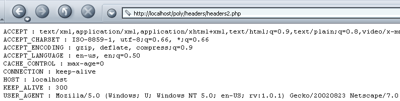
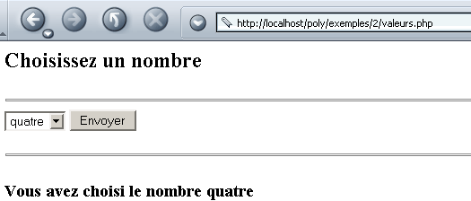
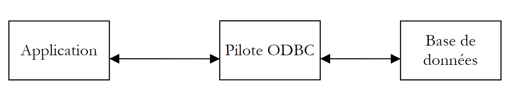
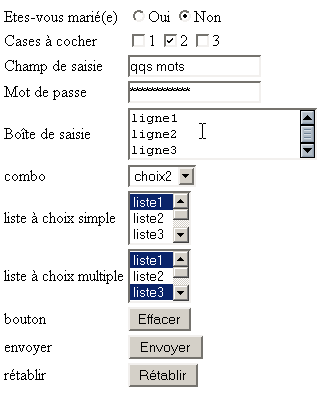
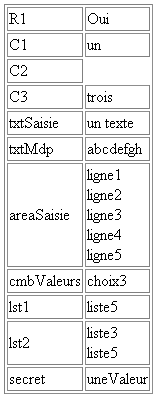
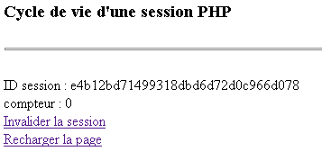

3. Introduzione alla programmazione web in PHP
3.1. Programmazione PHP
Ricordiamo che PHP è un linguaggio a tutti gli effetti e che, sebbene sia utilizzato principalmente nello sviluppo di applicazioni web, può essere impiegato anche in altri contesti. Il documento "PHP attraverso esempi pratici", disponibile all'indirizzo http://shiva.istia.univ-angers.fr/~tahe/pub/php/php.pdf, illustra le basi del linguaggio. Si presume che tali nozioni siano già acquisite. Mostriamo con un semplice esempio la procedura di esecuzione di un programma PHP su Windows. Il codice seguente è stato salvato con il nome coucou.php.
L'esecuzione di questo programma avviene in una finestra DOS di Windows:
dos>"e:\program files\easyphp\php\php.exe" coucou.php
X-Powered-By: PHP/4.3.0-dev
Content-type: text/html
coucou
Si noti che l'interprete PHP invia per impostazione predefinita:
- l'interprete PHP è php.exe e si trova normalmente nella directory <php> di installazione del software.
- le intestazioni HTTP X-Powered-By e Content-type:
- la riga vuota che separa le intestazioni HTTP dal resto del documento
- il documento qui generato dal testo scritto dalla funzione echo
3.2. Il file di configurazione dell’interprete PHP
Il comportamento dell’interprete PHP è configurato da un file di configurazione denominato php.ini e archiviato, in Windows, nella directory di Windows stessa. Si tratta di un file di dimensioni considerevoli poiché, in Windows e per la versione 4.2 di PHP, conta quasi 1000 righe, di cui fortunatamente i tre quarti sono commenti. Esaminiamo alcuni degli attributi di configurazione di PHP:
consente di includere istruzioni tra i tag <? >. In off, queste dovrebbero essere inserite tra <?php ... > | |
in on consente di utilizzare la sintassi <% =variabile %> utilizzata dalla tecnologia ASP (Active Server Pages) | |
consente l'invio dell'intestazione HTTP X-Powered-By: PHP/4.3.0-dev. A off, questa intestazione viene rimossa. | |
definisce l'ambito del monitoraggio degli errori. In questo caso verranno segnalati tutti gli errori (E_ALL) tranne gli avvisi durante l'esecuzione (~E_NOTICE) | |
a on, inserisce gli errori nel flusso HTML inviato al cliente. Questi vengono quindi visualizzati nel browser. Si consiglia di impostare questa opzione su off. | |
gli errori verranno memorizzati in un file | |
memorizza l’ultimo errore verificatosi nella variabile $php_errormsg | |
imposta il file di memorizzazione degli errori (se log_errors=on) | |
in on, alcune variabili diventano globali. Considerato una vulnerabilità di sicurezza. | |
genera per impostazione predefinita l'intestazione HTTP: Content-type: text/html | |
l'elenco delle directory che verranno esplorate alla ricerca dei file richiesti dalle direttive include o require | |
la directory in cui verranno salvati i file che memorizzano le diverse sessioni in corso. Il disco in questione è quello su cui è stato installato PHP. Qui /temp indica e:\temp |
Questo file di configurazione influisce sulla portabilità del programma PHP scritto. Infatti, se un'applicazione web deve recuperare il valore di un campo C di un modulo web, potrà farlo in vari modi a seconda che la variabile di configurazione register_globals abbia il valore on o off:
- off: il valore verrà recuperato da $HTTP_GET_VARS["C"] oppure _GET["C"] oppure $HTTP_POST_VARS["C"] oppure $_POST["C"] a seconda del metodo (GET/POST) utilizzato dal cliente per inviare i valori del modulo
- : come sopra, più $C, poiché il valore del campo C è stato reso globale in una variabile con lo stesso nome del campo
Se uno sviluppatore scrive un programma utilizzando la notazione $C poiché il server web/PHP che utilizza assegna alla variabile register_globals il valore on, questo programma non funzionerà più se viene trasferito su un server web/PHP in cui la stessa variabile è impostata su off. Si cercherà quindi di scrivere programmi evitando di utilizzare funzionalità che dipendono dalla configurazione del server web/PHP.
3.3. Configurare PHP in fase di esecuzione
Per migliorare la portabilità di un programma PHP, è possibile impostare autonomamente alcune delle variabili di configurazione di PHP. Queste vengono modificate durante l’esecuzione del programma e solo per esso. Due funzioni sono utili in questo processo:
restituisce il valore della variabile di configurazione confVariable | |
imposta il valore della variabile di configurazione confVariable |
Ecco un esempio in cui si imposta il valore della variabile di configurazione track_errors:
<?php
// valore della variabile di configurazione track_errors
echo "track_errors=".ini_get("track_errors")."\n";
// modifica di questo valore
ini_set("track_errors","off");
// verifica
echo "track_errors=".ini_get("track_errors")."\n";
?>
All'esecuzione, si ottengono i seguenti risultati:
E:\data\serge\web\php\poly\intro>"E:\Program Files\EasyPHP\php\php.exe" conf1.php
Content-type: text/html
track_errors=1
track_errors=off
Il valore della variabile di configurazione track_errors era inizialmente 1 (~on). Lo modifichiamo in off. È importante ricordare che, se la nostra applicazione deve basarsi su determinati valori delle variabili di configurazione, è prudente inizializzarle all'interno del programma stesso.
3.4. Contesto di esecuzione degli esempi
Gli esempi contenuti in questo fascicolo saranno eseguiti con la seguente configurazione:
- PC su Windows 2000
- server Apache 1.3
- PHP 4.3
La configurazione del server Apache è definita nel file httpd.conf. Le righe seguenti indicano ad Apache di caricare PHP come modulo integrato in Apache e di inoltrare all’interprete PHP ogni richiesta relativa a un documento con determinati suffissi, tra cui .php. Questo è il suffisso predefinito che useremo per i nostri programmi PHP.
LoadModule php4_module "E:/Program Files/EasyPHP/php/php4apache.dll"
AddModule mod_php4.c
AddType application/x-httpd-php .phtml .pwml .php3 .php4 .php .php2 .inc
Inoltre, abbiamo definito per Apache un alias generico:
Alias "/poly/" "e:/data/serge/web/php/poly/"
<Directory "e:/data/serge/web/php/poly">
Options Indexes FollowSymLinks Includes
AllowOverride All
#Ordine: allow, deny
Allow from all
</Directory>
Chiamiamo <poly> il percorso e:/data/serge/web/php/poly. Se vogliamo richiedere con un browser il documento doc.php al server Apache, useremo l'http://localhost/poly/doc.php URL. Il server Apache riconoscerà in URL l’alias poly e assocerà quindi URL /poly/doc.php al documento <poly>\doc.php.
3.5. Un primo esempio
Scriviamo una prima applicazione web/PHP. Il testo seguente è salvato nel file heure.php:
<html>
<head>
<title>Une page php dynamique</title>
</head>
<body>
<center>
<h1>Une page PHP générée dynamiquement</h1>
<h2>
<?php
$maintenant=time();
echo date("j/m/y, h:i:s",$maintenant);
?>
</h2>
<br>
A chaque fois que vous rafraîchissez la page, l'heure change.
</body>
</html>
Se richiediamo questa pagina con un browser, otteniamo il seguente risultato:

La parte dinamica della pagina è stata generata dal codice PHP:
Cosa è successo esattamente? Il browser ha richiesto l'http://localhost/poly/intro/heure.php URL. Il server web (nell'esempio Apache) ha ricevuto questa richiesta e, in base al suffisso .php del documento richiesto, ha rilevato che doveva inoltrare la richiesta all'interprete PHP. Quest'ultimo analizza quindi il documento heure.php ed esegue tutte le porzioni di codice situate tra i tag <?php > e sostituisce ciascuna di esse con le righe scritte dalle istruzioni PHP, echo o print. Pertanto, l’interprete PHP eseguirà la porzione di codice sopra riportata e la sostituirà con la riga generata dall’istruzione echo:
Una volta eseguite tutte le porzioni di codice PHP, il documento PHP è diventato un semplice documento HTML, che viene quindi inviato al cliente.
Si cercherà di evitare il più possibile di mescolare il codice PHP con il codice HTML. A tal fine, si potrebbe riscrivere l’applicazione precedente nel modo seguente:
<!-- codice PHP -->
<?php
// si recupera l'ora corrente
$maintenant=time();
$maintenant=date("j/m/y, h:i:s",$maintenant);
?>
<!-- codice HTML -->
<html>
<head>
<title>Une page php dynamique</title>
</head>
<body>
<center>
<h1>Une page PHP générée dynamiquement</h1>
<h2>
<?php echo $maintenant ?>
</h2>
<br>
A chaque fois que vous rafraîchissez la page, l'heure change.
</body>
</html>
Il risultato ottenuto nel browser è identico:

La seconda versione è migliore della prima perché nel codice PHP c'è meno codice rispetto a HTML. La struttura della pagina risulta così più chiara. Si può andare oltre inserendo il codice PHP e il codice HTML in due file diversi. Il codice PHP è memorizzato nel file heure3.php:
<!-- codice PHP -->
<?php
// si recupera l'ora corrente
$maintenant=time();
$maintenant=date("j/m/y, h:i:s",$maintenant);
// si visualizza la risposta
include "heure3-page1.php";
?>
Il codice HTML è invece memorizzato nel file heure3-page1.php:
<!-- codice HTML -->
<html>
<head>
<title>Une page php dynamique</title>
</head>
<body>
<center>
<h1>Une page PHP générée dynamiquement</h1>
<h2>
<?php echo $maintenant ?>
</h2>
<br>
A chaque fois que vous rafraîchissez la page, l'heure change.
</body>
</html>
Quando il browser richiederà il documento heure3.php, questo verrà caricato e analizzato dall'interprete PHP. All'incontro con la riga
L'interprete includerà il file heure3-page1.php nel codice sorgente di heure3.php e lo eseguirà. In questo modo, sarà come se si avesse il seguente codice PHP:
<!-- codice PHP -->
<?php
// si recupera l'ora corrente
$maintenant=time();
$maintenant=date("j/m/y, h:i:s",$maintenant);
?>
<!-- codice HTML -->
<html>
<head>
<title>Une page php dynamique</title>
</head>
<body>
<center>
<h1>Une page PHP générée dynamiquement</h1>
<h2>
<?php echo $maintenant ?>
</h2>
<br>
A chaque fois que vous rafraîchissez la page, l'heure change.
</body>
</html>
Il risultato ottenuto è lo stesso di prima:

La soluzione di inserire i codici PHP e HTML in file separati verrà adottata in seguito. Essa presenta diversi vantaggi:
- la struttura delle pagine inviate al cliente non è sommersa dal codice PHP. In questo modo possono essere gestite da un “web designer” con competenze grafiche ma scarse conoscenze di PHP.
- il codice PHP funge da "front-end" per le richieste dei clienti. Il suo scopo è calcolare i dati necessari alla pagina che verrà restituita in risposta al cliente.
La soluzione presenta tuttavia uno svantaggio: invece di richiedere il caricamento di un unico documento, richiede il caricamento di più documenti, con conseguente possibile perdita di prestazioni.
3.6. Recuperare i parametri inviati da un client web
3.6.1. tramite un POST
Consideriamo il seguente modulo in cui l’utente deve fornire due informazioni: un nome e un’età.

Una volta compilati i campi Nom e Age, l’utente preme il pulsante Envoyer, che è di tipo submit. I valori del modulo vengono quindi inviati al server. Quest’ultimo restituisce il modulo insieme a una tabella che elenca i valori ricevuti:

Il browser richiede il modulo alla successiva applicazione nomage.php:
<?php
// si dispone dei parametri previsti?
$post=isset($_POST["txtNom"]) && isset($_POST["txtAge"]);
if($post){
// si recuperano i parametri txtNom e txtAge "inviati" dal cliente
$nom=$_POST["txtNom"];
$age=$_POST["txtAge"];
} else {
$nom="";
$age="";
}//if
// visualizzazione della pagina
include "nomage-p1.php";
?>
Alcune spiegazioni:
- un campo del modulo HTML denominato «campo» può essere inviato al server tramite il metodo GET o il metodo POST. Se viene inviato tramite il metodo GET, il server può recuperarlo nella variabile $_GET["champ"] e nella variabile $_POST["champ"] sese viene inviato tramite il metodo POST.
- L'esistenza di un dato può essere verificata con la funzione isset(dato), che restituisce true se il dato esiste, false in caso contrario.
- L'applicazione nomage.php crea tre variabili: $nom per il nome del modulo, $age per l’età e $post per indicare se sono stati “inviati” dei valori o meno. Queste tre variabili vengono trasmesse alla pagina nomage-p1.php. Si noti che, sebbene quest’ultima partecipi alla generazione della risposta al cliente, quest’ultimo ne è all’oscuro. Per lui, è l’applicazione nomage.php a fornirgli la risposta.
- La prima volta che un cliente richiede l’applicazione nomage.php, si ottiene $post come valore falso. Infatti, durante questa prima chiamata, nessun valore del modulo viene trasmesso al server.
La pagina nomage-p1.php è la seguente:
<html>
<head>
<title>Formulaire web</title>
</head>
<body>
<center>
<h3>Un formulaire Web</h3>
<h4>Récupération des valeurs des champs d'un formulaire</h4>
<hr>
<form name="frmPersonne" method="post">
<table>
<tr>
<td>Nom</td>
<td><input type="text" value="<?php echo $nom ?>" name="txtNom" size="20"></td>
<td>Age</td>
<td><input type="text" value="<?php echo $age ?>" name="txtAge" size="3"></td>
<tr>
</table>
<input type="submit" name="cmdEffacer" value="Envoyer">
</form>
</center>
<hr>
<?php
// sono stati inviati dei valori?
if ($post) {
?>
<h4>Valeurs récupérées</h4>
<table border="1">
<tr>
<td>Nom</td><td><?php echo $nom ?></td>
<td width="10"></td>
<td>Age</td><td><?php echo $age ?></td>
<tr>
</table>
<?php } ?>
</body>
</html>
L'applicazione nomage-p1.php presenta il modulo frmPersonne. Questo è definito dal tag:
Poiché l'attributo action del tag non è definito, il browser trasmetterà i dati del modulo all'URL che ha interrogato per ottenerlo, ovvero c.a.d. l'applicazione nomage.php.
Distinguiamo i due casi di chiamata dell’applicazione nomage.php:
- È la prima volta che l’utente la chiama. L’applicazione nomage.php chiama quindi l’applicazione nomage-p1.php fornendole i valori ($nom,$age,$post)=("","",falso). L’applicazione nomage-p1.php visualizza quindi un modulo vuoto.
- L’utente compila il modulo e utilizza il pulsante Envoyer (di tipo submit). I valori del modulo (txtNom, txtAge) vengono quindi “inviati” (method="post" in <form>) all’applicazione nomage.php (l’attributo action non è definito in <form>). L’applicazione nomage.php calcola ($nom, $age,$post) = (txtNom, txtAge, vero) e li trasmette all’applicazione nomage-p1.php, che visualizza quindi un modulo già compilato e la tabella dei valori recuperati.
3.6.2. tramite un GET
Nel caso in cui i valori del modulo vengano trasmessi al server tramite un GET, l’applicazione nomage.php diventa la successiva applicazione nomage2.php:
<?php
// sono presenti i parametri previsti?
$get=isset($_GET["txtNom"]) && isset($_GET["txtAge"]);
if($get){
// vengono recuperati i parametri txtNom e txtAge "GETTés" da parte del cliente
$nom=$_GET["txtNom"];
$age=$_GET["txtAge"];
} else {
$nom="";
$age="";
}//se
// visualizzazione della pagina
include "nomage-p2.php";
?>
L'applicazione nomage-p2.php è identica all'applicazione nomage-p1.php, salvo i seguenti dettagli:
- il tag form è stato modificato:
- l'applicazione ora recupera una variabile $get anziché $post:
All'esecuzione, quando i valori vengono inseriti nel modulo e inviati al server, il browser riflette nel proprio campo URL il fatto che i valori sono stati inviati tramite il metodo GET:

3.7. Recuperare le intestazioni HTTP inviate da un client web
Quando un browser effettua una richiesta a un server web, gli invia una serie di intestazioni HTTP. A volte è utile poter accedere a queste informazioni. In una prima fase, è possibile avvalersi della tabella associativa $_SERVER. Questo contiene varie informazioni fornite dal server web, tra cui, tra le altre, le intestazioni HTTP fornite dal client. Consideriamo il seguente programma che visualizza tutti i valori dell'array $_SERVER:
<?php
// visualizza le variabili relative al server web
// invio di testo semplice
header("Content-type: text/plain");
// scorrimento dell'array associativo $_SERVER
reset($_SERVER);
while (list($clé,$valeur)=each($_SERVER)){
echo "$clé : $valeur\n";
}//while
?>
Salviamo questo codice in headers.php e apriamo questo URL con un browser:

Otteniamo una serie di informazioni, tra cui le intestazioni HTTP inviate dal browser. Si tratta dei valori associati alle chiavi che iniziano con HTTP. Analizziamo in dettaglio alcune delle informazioni ottenute sopra:
tipi di documenti accettati dal client web | |
tipi di caratteri accettati nei documenti | |
tipi di codifica accettati per i documenti | |
tipi di lingue accettati per i documenti | |
tipo di connessione con il server. Keep-Alive: il server deve mantenere aperta la connessione dopo aver fornito la risposta | |
? durata massima di apertura della connessione | |
macchina host interrogata dal client | |
Identità del cliente | |
Indirizzo IP del client | |
porta di comunicazione utilizzata dal cliente | |
protocollo HTTP utilizzato dal server | |
metodo di interrogazione utilizzato dal client (GET o POST) | |
richiesta ?param1=val1¶m2=val2&... inserita dopo la richiesta URL (metodo GET) |
Modificando leggermente il codice del programma precedente, possiamo recuperare solo le intestazioni HTTP:
<?php
// visualizza le variabili relative al server web
// invio di testo semplice
header("Content-type: text/plain");
// scorrimento dell'array associativo $_SERVER
reset($_SERVER);
while (list($clé,$valeur)=each($_SERVER)){
// intestazione HTTP ?
if(strtolower(substr($clé,0,4))=="http")
echo substr($clé,5)." : $valeur\n";
}//while
?>
Il risultato ottenuto nel browser è il seguente:

Se si desidera un'intestazione HTTP specifica, si scriverà ad esempio $_SERVER["HTTP_ACCEPT"].
3.8. Recuperare informazioni sull'ambiente
Il server web/PHP viene eseguito in un ambiente di cui è possibile conoscere le caratteristiche tramite la tabella $_ENV, che memorizza varie caratteristiche dell'ambiente di esecuzione. Consideriamo la seguente applicazione env1.php:
<?php
// visualizza le variabili relative al server web
// invia testo semplice
header("Content-type: text/plain");
// scorre l'array associativo $_ENV
reset($_ENV);
while (list($clé,$valeur)=each($_ENV)){
echo "$clé : $valeur\n";
}//while
?>
In un browser viene visualizzato il seguente risultato (vista parziale):

Come si vede nell'esempio sopra, il server web/PHP viene eseguito su Windows OS NT.
3.9. Esempi
3.9.1. Generazione dinamica di un modulo - 1
Prendiamo come esempio la generazione di un modulo con un solo controllo: un menu a tendina. Il contenuto di questo menu a tendina viene costruito dinamicamente con valori prelevati da un array. Nella realtà, questi valori vengono spesso prelevati da un database. Il modulo è il seguente:

Se nell’esempio sopra riportato si esegue Envoyer, si ottiene la seguente risposta:

Il codice HTML del modulo iniziale, una volta generato, è il seguente:
<html>
<head>
<title>Génération de formulaire</title>
</head>
<body>
<h2>Choisissez un nombre</h2>
<hr>
<form name="frmvaleurs" method="post" action="valeurs.php">
<select name="cmbValeurs" size="1">
<option>un</option>
<option>deux</option>
<option>trois</option>
<option>quatre</option>
<option>cinq</option>
<option>six</option>
<option>sept</option>
<option>huit</option>
<option>neuf</option>
<option>dix</option>
</select>
<input type="submit" value="Envoyer" name="cmdEnvoyer">
</form>
</body>
</html>
L'applicazione PHP è composta da una pagina principale valeurs.php che viene richiamata sia per ottenere il modulo iniziale (l'elenco dei valori) sia per elaborarne i valori e fornire la risposta (il valore selezionato). L'applicazione genera due pagine diverse:
- quella del modulo iniziale, che verrà generata dal programma valeurs-p1.php
- quella della risposta fornita all’utente, che sarà generata dal programma valeurs-p2.php
L’applicazione valeurs.php è la seguente:
<?php
// il array dei valori
$valeurs=array("un","deux","trois","quatre","cinq","six","sept","huit","neuf","dix");
// si hanno i parametri previsti
$requêteVide=! isset($_POST["cmbValeurs"]);
// si recupera la scelta dell'utente
if ($requêteVide){
// richiesta iniziale
include "valeurs-p1.php";
}else{
// risposta a un POST
$choix=$_POST["cmbValeurs"];
include "valeurs-p2.php";
}
?>
Definisce la tabella dei valori e chiama valeurs-p1.php per generare il modulo iniziale se la richiesta del cliente era vuota, oppure valeurs-p2.php per generare la risposta in caso di richiesta valida. Il programma valeurs1-php è il seguente:
<html>
<head>
<title>Génération de formulaire</title>
</head>
<body>
<h2>Choisissez un nombre</h2>
<hr>
<form name="frmvaleurs" method="post" action="valeurs.php">
<select name="cmbValeurs" size="1">
<?php
for($i=0;$i<count($valeurs);$i++){
echo "<option>$valeurs[$i]</option>\n";
}//per
?>
</select>
<input type="submit" value="Envoyer" name="cmdEnvoyer">
</form>
</body>
</html>
L'elenco dei valori del menu a tendina viene generato dinamicamente dall'array $valeurs trasmesso da valeurs.php. Il programma valeurs-p2.php genera la risposta:
<html>
<head>
<title>réponse</title>
</head>
<body>
<h2>Vous avez choisi le nombre <?php echo $choix ?></h2>
</body>
</html>
In questo caso, ci limitiamo a visualizzare il valore della variabile $choix, anch'essa trasmessa da valeurs.php.
3.9.2. Generazione dinamica di moduli - 2
Riprendiamo l’esempio precedente modificandolo come segue. Il modulo proposto è sempre lo stesso:

La risposta è diversa:

Nella risposta viene restituito il modulo, con il numero scelto dall’utente indicato sotto di esso. Inoltre, questo numero è quello che appare come selezionato nell’elenco visualizzato dalla risposta.
Il codice di valeurs.php è il seguente:
<?php
// configurazione
ini_set("register_globals","off");
// la tabella dei valori
$valeurs=array("un","deux","trois","quatre","cinq","six","sept","huit","neuf","dix");
// si recupera l'eventuale scelta dell'utente
$choix=$_POST["cmbValeurs"];
// si visualizza la risposta
include "valeurs-p1.php";
?>
Si noti che in questo caso si è avuto cura di configurare PHP in modo che non vi fossero variabili globali. Si tratta in genere di una precauzione opportuna, poiché le variabili globali comportano problemi di sicurezza. Un'alternativa consiste nell'inizializzare tutte le variabili utilizzate. Ciò avrà l'effetto di "sovrascrivere" un'eventuale variabile globale con lo stesso nome.
La pagina del modulo viene visualizzata da valeurs-p1.php:
<html>
<head>
<title>Génération de formulaire</title>
</head>
<body>
<h2>Choisissez un nombre</h2>
<hr>
<form name="frmvaleurs" method="post" action="valeurs.php">
<select name="cmbValeurs" size="1">
<?php
for($i=0;$i<count($valeurs);$i++){
// se l'opzione corrente è uguale alla scelta, la si seleziona
if (isset($choix) && $choix==$valeurs[$i])
echo "<option selected>$valeurs[$i]</option>\n";
else echo "<option>$valeurs[$i]</option>\n";
}//for
?>
</select>
<input type="submit" value="Envoyer" name="cmdEnvoyer">
</form>
<?php
// continua alla pagina successiva
if(isset($choix)){
echo "<hr>\n";
echo "<h3>Vous avez choisi le nombre $choix</h3>\n";
}
?>
</body>
</html>
Il programma che genera la pagina si basa sulla variabile $choix passata dal programma valeurs.php. Si noti che la struttura HTML della pagina sta iniziando a essere seriamente “inquinata” dal codice PHP. Il front-end valeurs.php potrebbe svolgere un lavoro maggiore, come mostra la seguente nuova versione:
<?php
// configurazione
ini_set("register_globals","off");
// la tabella dei valori
$valeurs=array("un","deux","trois","quatre","cinq","six","sept","huit","neuf","dix");
// si recupera l'eventuale scelta dell'utente
$choix=$_POST["cmbValeurs"];
// si calcola l'elenco dei valori da visualizzare
$HTMLvaleurs="";
for($i=0;$i<count($valeurs);$i++){
// se l'opzione corrente è uguale alla scelta, la si seleziona
if (isset($choix) && $choix==$valeurs[$i])
$HTMLvaleurs.="<option selected>$valeurs[$i]</option>\n";
else $HTMLvaleurs.="<option>$valeurs[$i]</option>\n";
}//for
// si calcola la seconda parte della pagina
$HTMLpart2="";
if(isset($choix)){
$HTMLpart2="<hr>\n";
$HTMLpart2.="<h3>Vous avez choisi le nombre $choix</h3>\n";
}//se
// si visualizza la risposta
include "valeurs-p2.php";
?>
La pagina è ora generata dal seguente programma valeurs-p2.php:
<html>
<head>
<title>Génération de formulaire</title>
</head>
<body>
<h2>Choisissez un nombre</h2>
<hr>
<form name="frmvaleurs" method="post" action="valeurs.php">
<select name="cmbValeurs" size="1">
<?php
// visualizzazione dell'elenco dei valori
echo $HTMLvaleurs;
?>
</select>
<input type="submit" value="Envoyer" name="cmdEnvoyer">
</form>
<?php
// visualizzazione della parte 2
echo $HTMLpart2;
?>
</body>
</html>
Il codice HTML è ora liberato da gran parte del codice PHP. Ricordiamo tuttavia lo scopo della suddivisione in un programma front-end che analizza ed elabora la richiesta di un cliente e in programmi incaricati semplicemente di visualizzare pagine configurate in base ai dati trasmessi dal front-end: si tratta di separare il lavoro dello sviluppatore PHP da quello del grafico. Lo sviluppatore PHP lavora sul front-end, mentre il grafico lavora sulle pagine web. Nella nostra nuova versione, il grafico non può più, ad esempio, lavorare sulla parte 2 della pagina poiché non ha più accesso al codice HTML della stessa. Nella prima versione, invece, poteva farlo. Nessuno dei due metodi è quindi perfetto.
3.9.3. Generazione dinamica di moduli - 3
Riprendiamo lo stesso problema di prima, ma questa volta i valori vengono prelevati da un database. Nel nostro esempio si tratta del database MySQL:
- il database si chiama dbValeurs
- il suo proprietario è admDbValeurs con password mdpDbValeurs
- il database contiene un’unica tabella denominata tvaleurs
- questa tabella ha un solo campo intero denominato «valore»
dos> mysql --database=dbValeurs --user=admDbValeurs --password=mdpDbValeurs
mysql> show tables;
+---------------------+
| Tables_in_dbValeurs |
+---------------------+
| tvaleurs |
+---------------------+
1 row in set (0.00 sec)
mysql> describe tvaleurs;
+--------+---------+------+-----+---------+-------+
| Field | Type | Null | Key | Default | Extra |
+--------+---------+------+-----+---------+-------+
| valeur | int(11) | | | 0 | |
+--------+---------+------+-----+---------+-------+
mysql> select * from tvaleurs;
+--------+
| valeur |
+--------+
| 0 |
| 1 |
| 2 |
| 3 |
| 4 |
| 6 |
| 5 |
| 7 |
| 8 |
| 9 |
+--------+
10 rows in set (0.00 sec)
In un'applicazione che utilizza un database, si riscontrano generalmente le seguenti fasi:
- Connessione a SGBD
- Invio di query SQL a un database SGBD
- Elaborazione dei risultati di tali query
- Chiusura della connessione a SGBD
Le fasi 2 e 3 vengono eseguite ripetutamente; la chiusura della connessione avviene solo al termine dell’utilizzo del database. Si tratta di uno schema relativamente classico per chiunque abbia già utilizzato un database in modo interattivo. La tabella seguente riporta le istruzioni PHP per eseguire queste diverse operazioni con i comandi SGBD e MySQL:
$connexion=mysql_pconnect($hote,$user,$pwd) $connexion=mysql_connect($hote,$user,$pwd) $hote: nome Internet del computer su cui è in esecuzione il SGBD MySQL. Infatti è possibile lavorare con SGBD e MySQL remoti. $user: nome di un utente noto a SGBD e MySQL $pwd: la sua password $connexion: la connessione creata mysql_pconnect crea una connessione persistente con SGBD e MySQL. Una connessione di questo tipo non viene chiusa al termine dello script, ma rimane aperta. Pertanto, quando sarà necessario aprire una nuova connessione con SGBD, PHP cercherà una connessione esistente appartenente allo stesso utente. Se la trova, la utilizzerà. Ciò comporta un risparmio di tempo. mysql_connect crea una connessione non persistente che viene quindi chiusa al termine dell’elaborazione con SGBD e MySQL. | |
$résultats=mysql_db_query($base,$requête,$connexion) $base: la base di MySQL con cui lavoreremo $requête: una query SQL (insert, delete, update, select, ...) $connexion: la connessione tra SGBD e MySQL $résultats: i risultati della query - variano a seconda che la query sia un select o un'operazione di aggiornamento (insert, update, delete, ...) | |
$résultats=mysql_db_query($base,"select ...",$connexion) Il risultato di un'istruzione SELECT è una tabella, ovvero un insieme di righe e colonne. È possibile accedere a questa tabella tramite $résultats. $ligne=mysql_fetch_row($résultats) legge una riga della tabella e la inserisce in $ligne sotto forma di array. Pertanto, $ligne[i] rappresenta la colonna i della riga recuperata. La funzione mysql_fetch_row può essere richiamata ripetutamente. Ogni volta, legge una nuova riga dalla tabella $résultats. Quando viene raggiunta la fine della tabella, la funzione restituisce il valore false. Pertanto, la tabella $résultats può essere utilizzata nel modo seguente: while($riga = mysql_fetch_row($risultati)) { // elabora la riga corrente $riga }//while | |
$résultats=mysql_db_query($base,"inserisci ...",$connexion) Il valore $résultats è vero o falso a seconda che l'operazione abbia avuto esito positivo o negativo. In caso di esito positivo, la funzione mysql_affected_rows consente di conoscere il numero di righe modificate dall'operazione di aggiornamento. | |
mysql_close($connessione) $connexion: una connessione a SGBD MySQL |
Il codice del front-end valeurs.php diventa il seguente:
<?php
// configurazione
ini_set("register_globals","off");
ini_set("display_errors","off");
ini_set("track_errors","on");
// la tabella dei valori
list($erreur,$valeurs)=getValeurs();
// Si è verificato un errore?
if($erreur){
// visualizzazione della pagina di errore
include "valeurs-err.php";
// fine
return;
}//if
// si recupera l'eventuale scelta dell'utente
$choix=$_POST["cmbValeurs"];
// si calcola l'elenco dei valori da visualizzare
$HTMLvaleurs="";
for($i=0;$i<count($valeurs);$i++){
// se l'opzione corrente è uguale alla scelta, la si seleziona
if (isset($choix) && $choix==$valeurs[$i])
$HTMLvaleurs.="<option selected>$valeurs[$i]</option>\n";
else $HTMLvaleurs.="<option>$valeurs[$i]</option>\n";
}//for
// si calcola la seconda parte della pagina
$HTMLpart2="";
if(isset($choix)){
$HTMLpart2="<hr>\n";
$HTMLpart2.="<h3>Vous avez choisi le nombre $choix</h3>\n";
}//se
// si visualizza la risposta
include "valeurs-p1.php";
// fine
return;
// ------------------------------------------------------------------------
function getValeurs(){
// recupera i valori da un database MySQL
$user="admDbValeurs";
$pwd="mdpDbValeurs";
$db="dbValeurs";
$hote="localhost";
$table="tvaleurs";
$champ="valeur";
// apertura di una connessione persistente al server MySQL
// oppure, in alternativa, di una connessione normale
($connexion=mysql_pconnect($hote,$user,$pwd))
|| ($connexion=mysql_connect($hote,$user,$pwd));
if(! $connexion)
return array("Base de données indisponible(".mysql_error()."). Veuillez recommencer ultérieurement.");
// recupero dei valori
$selectValeurs=mysql_db_query($db,"select $champ from $table",$connexion);
if(! $selectValeurs)
return array("Base de données indisponible(".mysql_error()."). Veuillez recommencer ultérieurement.");
// i valori vengono inseriti in un array
$valeurs=array();
while($ligne=mysql_fetch_row($selectValeurs)){
$valeurs[]=$ligne[0];
}//while
// chiusura della connessione (se è persistente, in realtà non verrà chiusa)
mysql_close($connexion);
// restituzione del risultato
return array("",$valeurs);
}//getValeurs
?>
In questo caso, i valori da inserire nel menu a tendina non sono forniti da una tabella, ma dalla funzione getValeurs(). Questa funzione:
- apre una connessione persistente (mysql_pconnect) con il server mySQL passando un nome utente registrato e la relativa password.
- Una volta ottenuta la connessione, viene inviata una richiesta select per recuperare i valori presenti nella tabella tvaleurs del database dbValeurs.
- Il risultato della query select viene inserito nell’array $valeurs, che viene restituito al programma chiamante.
- La funzione restituisce infatti un array con due risultati ($erreur, $valeurs), dove il primo elemento è un eventuale messaggio di errore o, in caso contrario, una stringa vuota.
- Il programma chiamante verifica se si è verificato un errore e, in caso affermativo, visualizza la pagina valeurs-err.php. Questa è la seguente:
<html>
<head>
<title>Erreur</title>
</head>
<body>
<h3>L'erreur suivante s'est produite</h3>
<font color="red">
<h4><?php echo $erreur ?></h4>
</font>
</body>
</html>
- se non si sono verificati errori, il programma chiamante dispone dei valori nell'array $valeurs. Si torna quindi al problema precedente.
Ecco due esempi di esecuzione:
- con errore

- senza errore

3.9.4. Generazione dinamica di moduli - 4
Nell'esempio precedente, cosa succederebbe se si cambiasse il codice SGBD? Se si passasse, ad esempio, da MySQL a Oracle o a SQL Server? Sarebbe necessario riscrivere la funzione getValeurs(), che fornisce i valori. Il vantaggio di aver raggruppato in una funzione il codice necessario per recuperare i valori da visualizzare nell’elenco è che il codice da modificare è ben circoscritto e non disperso in tutto il programma. La funzione getValeurs() può essere riscritta in modo da renderla indipendente dal SGBD utilizzato. È sufficiente che operi con il driver ODBC di SGBD anziché direttamente con SGBD.
Sul mercato esistono numerosi database. Al fine di uniformare l’accesso ai database in ambiente Windows, Microsoft ha sviluppato un’interfaccia denominata ODBC (Open DataBase Connectivity). Questo livello nasconde le specificità di ciascun database dietro un’interfaccia standard. Su Windows sono disponibili numerosi driver che facilitano l’accesso ai database. Ecco, ad esempio, un elenco di driver installati su un computer Windows:

Anche il SGBD MySQL dispone di un driver ODBC. Un’applicazione che si avvale dei driver ODBC può utilizzare qualsiasi database tra quelli sopra elencati senza necessità di riscrittura.
 |
Rendiamo accessibile il nostro database MySQL dbValeurs tramite un driver ODBC. La procedura riportata di seguito è quella per Windows 2000. Per i sistemi Win9x, la procedura è molto simile. Si attiva il gestore delle risorse ODBC:

Utilizzare il pulsante [Add] per aggiungere una nuova fonte di dati ODBC:

Si seleziona il driver ODBC MySQL, si esegue [Terminer] e quindi si specificano le caratteristiche della fonte dati:

il nome assegnato alla fonte dati ODBC (odbc-valori) | |
il nome del computer che ospita SGBD MySQL e che gestisce la fonte dati (localhost) | |
il nome del database MySQL che costituisce la fonte dati (dbValeurs) | |
un utente con diritti di accesso sufficienti al database MySQL da gestire (admDbValeurs) | |
la propria password (mdpDbValeurs) |
PHP è in grado di lavorare con i driver ODBC. La tabella seguente riporta le funzioni utili da conoscere:
$connexion=odbc_pconnect($dsn,$user,$pwd) $connexion=odbc_connect($dsn,$user,$pwd) $dsn: nome DSN (Data Source Name) del computer su cui è in esecuzione il SGBD $user: nome di un utente noto a SGBD $pwd: la sua password $connexion: la connessione creata odbc_pconnect crea una connessione persistente con SGBD. Tale connessione non viene chiusa al termine dello script, ma rimane aperta. Pertanto, quando sarà necessario aprire una nuova connessione con SGBD, PHP cercherà una connessione esistente appartenente allo stesso utente. Se la trova, la utilizzerà. Ciò comporta un risparmio di tempo. odbc_connect crea una connessione non persistente che viene quindi chiusa al termine dell’elaborazione con SGBD. | |
$requêtePréparée=odbc_prepare($connexion,$requête) $requête: una richiesta SQL (insert, delete, update, select, ...) $connexion: la connessione a SGBD Analizza la query $requête e ne prepara l'esecuzione. La query così "preparata" è indicata dal risultato $requêtePréparée. Preparare una query per la sua esecuzione non è obbligatorio, ma migliora le prestazioni poiché l'analisi della query viene effettuata una sola volta. Si richiede quindi l’esecuzione della query preparata. Se si richiede ripetutamente l’esecuzione di una query non preparata, l’analisi della stessa viene effettuata ogni volta, il che è superfluo. Una volta preparata, la query viene eseguita da $res=odbc_execute($requêtePréparée) che restituisce vero o falso a seconda che l’esecuzione della query abbia esito positivo o negativo | |
Il risultato di una selezione è una tabella, ovvero un insieme di righe e colonne. È possibile accedere a questa tabella tramite $requêtePréparée. $res=odbc_fetch_row($requêtePréparée) legge una riga della tabella risultante da select. Restituisce vero o falso a seconda che l'esecuzione della query abbia esito positivo o negativo. Gli elementi della riga recuperata sono disponibili tramite la funzione odbc_result: $val=odbc_result($requêtePréparée,i): colonna i della riga appena letta $val=odbc_result($requêtePréparée,"nomColonne"): colonna nomColonne della riga appena letta La funzione odbc_fetch_row può essere richiamata più volte. Ogni volta, legge una nuova riga della tabella dei risultati. Quando si raggiunge la fine della tabella, la funzione restituisce il valore false. In questo modo, la tabella dei risultati può essere utilizzata come segue: | |
odbc_close($connessione) $connexion: una connessione a SGBD MySQL |
La funzione getValeurs(), incaricata di recuperare i valori dal database ODBC, è la seguente:
// ------------------------------------------------------------------------
function getValeurs(){
// recupera i valori da un database MySQL
$user="admDbValeurs";
$pwd="mdpDbValeurs";
$db="dbValeurs";
$dsn="odbc-valeurs";
$table="tvaleurs";
$champ="valeur";
// apertura di una connessione persistente al server MySQL
// oppure, in caso contrario, di una connessione normale
($connexion=odbc_pconnect($dsn,$user,$pwd))
|| ($connexion=odbc_connect($dsn,$user,$pwd));
if(! $connexion)
return array("1 - Base de données indisponible(".odbc_error()."). Veuillez recommencer ultérieurement.");
// recupero dei valori
$selectValeurs=odbc_prepare($connexion,"select $champ from $table");
if(! odbc_execute($selectValeurs))
return array("2 - Base de données indisponible(".odbc_error()."). Veuillez recommencer ultérieurement.");
// i valori vengono inseriti in un array
$valeurs=array();
while(odbc_fetch_row($selectValeurs)){
$valeurs[]=odbc_result($selectValeurs,$champ);
}//while
// chiusura della connessione (se è persistente, in realtà non verrà chiusa)
odbc_close($connexion);
// restituzione del risultato
return array("",$valeurs);
}//getValeurs
?>
Se si esegue la nuova applicazione senza attivare il database odbc-valeurs, si ottiene il seguente risultato:

Si noti che il codice di errore restituito dal driver ODBC (odbc_error()=S1000) non è molto esplicito. Se il database odbc-valeurs viene reso disponibile, si ottengono gli stessi risultati di prima.
In conclusione, si può affermare che questa soluzione è valida ai fini della manutenzione dell’applicazione. Infatti, se il database dovesse cambiare, l’applicazione non dovrà essere modificata. L’amministratore di sistema dovrà semplicemente creare una nuova fonte di dati ODBC per il nuovo database. Sempre in un’ottica di manutenzione, sarebbe opportuno impostare i parametri di accesso al database ($dsn, $user, $pwd) in un file separato che l’applicazione caricherebbe all’avvio (include).
3.9.5. Recuperare i valori di un modulo
Abbiamo già recuperato più volte i valori di un modulo inviati da un client web. L’esempio seguente mostra un modulo che riunisce i componenti HTML più comuni e serve a recuperare i parametri inviati dal browser client. Il modulo è il seguente:

Viene visualizzato già precompilato. Successivamente l’utente può modificarlo:

Se preme il pulsante [Envoyer], il server gli restituisce l’elenco dei valori del modulo:

Il modulo è una pagina statica HTML balises.html:
<html>
<head>
<title>balises</title>
<script language="JavaScript">
function effacer(){
alert("Vous avez cliqué sur le bouton Effacer");
}//cancellare
</script>
</head>
<body background="/images/standard.jpg">
<form method="POST" action="parameters.php">
<table border="0">
<tr>
<td>Etes-vous marié(e)</td>
<td>
<input type="radio" value="oui" name="R1">Oui
<input type="radio" name="R1" value="non" checked>Non
</td>
</tr>
<tr>
<td>Cases à cocher</td>
<td>
<input type="checkbox" name="C1" value="un">1
<input type="checkbox" name="C2" value="deux" checked>2
<input type="checkbox" name="C3" value="trois">3
</td>
</tr>
<tr>
<td>Champ de saisie</td>
<td>
<input type="text" name="txtSaisie" size="20" value="qqs mots">
</td>
</tr>
<tr>
<td>Mot de passe</td>
<td>
<input type="password" name="txtMdp" size="20" value="unMotDePasse">
</td>
</tr>
<tr>
<td>Boîte de saisie</td>
<td>
<textarea rows="2" name="areaSaisie" cols="20">
ligne1
ligne2
ligne3
</textarea>
</td>
</tr>
<tr>
<td>combo</td>
<td>
<select size="1" name="cmbValeurs">
<option>choix1</option>
<option selected>choix2</option>
<option>choix3</option>
</select>
</td>
</tr>
<tr>
<td>liste à choix simple</td>
<td>
<select size="3" name="lst1">
<option selected>liste1</option>
<option>liste2</option>
<option>liste3</option>
<option>liste4</option>
<option>liste5</option>
</select>
</td>
</tr>
<tr>
<td>liste à choix multiple</td>
<td>
<select size="3" name="lst2[]" multiple>
<option selected>liste1</option>
<option>liste2</option>
<option selected>liste3</option>
<option>liste4</option>
<option>liste5</option>
</select>
</td>
</tr>
<tr>
<td>bouton</td>
<td>
<input type="button" value="Effacer" name="cmdEffacer" onclick="effacer()">
</td>
</tr>
<tr>
<td>envoyer</td>
<td>
<input type="submit" value="Envoyer" name="cmdRenvoyer">
</td>
</tr>
<tr>
<td>rétablir</td>
<td>
<input type="reset" value="Rétablir" name="cmdRétablir">
</td>
</tr>
</table>
<input type="hidden" name="secret" value="uneValeur">
</form>
</body>
</html>
La tabella sottostante illustra la funzione dei diversi tag presenti in questo documento e il valore recuperato da PHP per i diversi tipi di componenti di un modulo. Il valore di un campo denominato HTML C può essere inviato tramite un POST o un GET. Nel primo caso, verrà recuperato nella variabile $_GET["C"] e nel secondo caso nella variabile $_POST["C"]. La tabella seguente presuppone l’utilizzo di un POST.
Controllo | tag HTML | valore recuperato da PHP |
<form method="POST" > | ||
<input type="text" name="txtSaisie" size="20" value="alcune parole"> | $_POST["txtSaisie"]: valore contenuto nel campo txtSaisie del modulo | |
<input type="password" name="txtMdp" size="20" value="unMotDePasse"> | $_POST["txtmdp"]: valore contenuto nel campo txtMdp del modulo | |
<textarea rows="2" name="areaSaisie" cols="20"> riga1 riga 2 riga 3 </textarea> | $_POST["areaSaisie"]: righe contenute nel campo areaSaisie sotto forma di un'unica stringa di caratteri: "ligne1\r\nligne2\r\nligne3". Le righe sono separate tra loro dalla sequenza "\r\n". | |
<input type="radio" value="Sì" name="R1">Sì <input type="radio" name="R1" value="no" checked>No | $_POST["R1"]: valore (=value) del pulsante di opzione selezionato "sì" o "no" a seconda dei casi. | |
<input type="checkbox" name="C1" value="uno">1 <input type="checkbox" name="C2" value="due" checked>2 <input type="checkbox" name="C3" value="tre">3 | $_POST["C1"]: valore (=value) della casella se è selezionata; in caso contrario, la variabile non esiste. Pertanto, se la casella C1 è stata selezionata, $_POST["C1"] è pari a "uno"; in caso contrario, $_POST["C1"] non esiste. | |
<select size="1" name="cmbValeurs"> <option>scelta1</option> <option selected>scelta2</option> <option>opzione3</option> </select> | $_POST["cmbValeurs"]: opzione selezionata nell'elenco, ad esempio "scelta3". | |
<select size="3" name="lst1"> <option selected>lista1</option> <option>lista2</option> <option>lista3</option> <option>lista4</option> <option>lista5</option> </select> | $_POST["lst1"]: opzione selezionata dall'elenco, ad esempio "elenco5". | |
<select size="3" name="lst2[]" multiple> <option>lista1</option> <option>lista2</option> <option selected>lista3</option> <option>lista4</option> <option>lista5</option> </select> | $_POST["lst2"]: tabella delle opzioni selezionate nell'elenco, ad esempio ["liste3,"liste5"]. Si noti la sintassi particolare del tag HTML per questo caso specifico: lst2[]. | |
<input type="hidden" name="secret" value="uneValeur"> | $_POST["secret"]: valore (=value) del campo, in questo caso "uneValeur". |
Nel nostro esempio, i valori del modulo vengono inviati al programma parameters.php:
Il codice di quest'ultimo è il seguente:
<?php
// configurazione
ini_set("register_globals","off");
ini_set("display_errors","off");
// metodo di chiamata
$méthode=$_SERVER["REQUEST_METHOD"];
// recupero dei parametri
// dipende dal metodo di invio degli stessi
if($méthode=="GET")
$param=$_GET;
else $param=$_POST;
$R1=$param["R1"];
$C1=$param["C1"];
$C2=$param["C2"];
$C3=$param["C3"];
$txtSaisie=$param["txtSaisie"];
$txtMdp=$param["txtMdp"];
$areaSaisie=implode("<br>",explode("\r\n",$param["areaSaisie"]));
$cmbValeurs=$param["cmbValeurs"];
$lst1=$param["lst1"];
$lst2=implode("<br>",$param["lst2"]);
$secret=$param["secret"];
// richiesta valida?
$requêteValide=isset($R1) && (isset($C1) || isset($C2) || isset($C3))
&& isset($txtSaisie) && isset($txtMdp) && isset($areaSaisie)
&& isset($cmbValeurs) && isset($lst1) && isset($lst2)
&& isset($secret);
// visualizzazione della pagina
if ($requêteValide)
include "parameters-p1.php";
else include "balises.html";
?>
Analizziamo alcuni aspetti di questo programma:
- l'applicazione non si occupa della modalità di trasmissione dei valori del modulo al server. In entrambi i casi possibili (GET e POST), il dizionario dei valori trasmessi è referenziato da $param.
- A partire dal contenuto del campo areaSaisie "riga1\r\nriga2\r\n..." si crea un array di stringhe tramite explode("\r\n", $param["areaSaisie"]). Si ottiene quindi l'array [ligne1,ligne2,...]. Da questo si crea la stringa "ligne1<br>ligne2<br>..." con la funzione implode.
- Il valore dell’elenco a selezione multipla lst2 è un array, ad esempio ["option3","option5"]. A partire da questo, si crea una stringa di caratteri "option3<br>option5" con la funzione implode.
- L'applicazione verifica che tutti i parametri siano stati impostati. È importante ricordare che qualsiasi URL può essere richiamata manualmente o tramite programma e che non è detto che siano presenti i parametri previsti. Se mancano dei parametri, viene visualizzata la pagina balises.html, altrimenti la pagina parameters-p1.php. Quest’ultima mostra in una tabella i valori recuperati e calcolati in parameters.php:
<html>
<head>
<title>Récupération des paramètres d'un formulaire</title>
</head>
<body>
<table border="1">
<tr>
<td>R1</td>
<td><?php echo $R1 ?></td>
</tr>
<tr>
<td>C1</td>
<td><?php echo $C1 ?></td>
</tr>
<tr>
<td>C2</td>
<td><?php echo $C2 ?></td>
</tr>
<tr>
<td>C3</td>
<td><?php echo $C3 ?></td>
</tr>
<tr>
<td>txtSaisie</td>
<td><?php echo $txtSaisie ?></td>
</tr>
<tr>
<td>txtMdp</td>
<td><?php echo $txtMdp ?></td>
</tr>
<tr>
<td>areaSaisie</td>
<td><?php echo $areaSaisie ?></td>
</tr>
<tr>
<td>cmbValeurs</td>
<td><?php echo $cmbValeurs ?></td>
</tr>
<tr>
<td>lst1</td>
<td><?php echo $lst1 ?></td>
</tr>
<tr>
<td>lst2</td>
<td><?php echo $lst2 ?></td>
</tr>
<tr>
<td>secret</td>
<td><?php echo $secret ?></td>
</tr>
</table>
</body>
</html>
3.10. Monitoraggio della sessione
3.10.1. Il problema
Un'applicazione web può consistere in diversi scambi di moduli tra il server e il client. Il funzionamento è quindi il seguente:
fase 1
- il client C1 apre una connessione con il server ed effettua la sua richiesta iniziale.
- Il server invia il modulo F1 al client C1 e chiude la connessione aperta al punto 1.
Fase 2
- il client C1 compila il modulo e lo rinvia al server. A tal fine, il browser apre una nuova connessione con il server.
- Quest’ultimo elabora i dati del modulo 1, calcola le informazioni I1 sulla base di tali dati, invia un modulo F2 al client C1 e chiude la connessione aperta al punto 3.
Fase 3
- Il ciclo delle fasi 3 e 4 si ripete nelle fasi 5 e 6. Al termine della fase 6, il server avrà ricevuto due moduli F1 e F2 e, sulla base di questi, avrà calcolato le informazioni I1 e I2.
Il problema che si pone è: in che modo il server riesce a conservare le informazioni I1 e I2 relative al cliente C1? Questo problema è noto come tracciamento della sessione del cliente C1. Per comprenderne le cause, esaminiamo lo schema di un’applicazione server TCP-IP che serve contemporaneamente più clienti:
 |
In una classica applicazione client-server TCP-IP:
- il client stabilisce una connessione con il server
- scambia dati con il server tramite tale connessione
- la connessione viene chiusa da uno dei due partner
I due punti salienti di questo meccanismo sono:
- per ogni cliente viene creata una connessione unica
- questa connessione viene utilizzata per tutta la durata del dialogo tra il server e il suo cliente
Ciò che permette al server di sapere in un dato momento con quale client sta lavorando è la connessione, ovvero il "canale" che lo collega al proprio client. Poiché questo canale è dedicato a un determinato client, tutto ciò che arriva da esso proviene da quel client e tutto ciò che viene inviato attraverso di esso arriva a quello stesso client.
Il meccanismo client-server HTTP segue lo schema precedente, con la particolarità che la comunicazione client-server è limitata a un unico scambio tra il client e il server:
- il client apre una connessione verso il server ed effettua la sua richiesta
- il server invia la risposta e chiude la connessione
Se al momento T1 un cliente C effettua una richiesta al server, ottiene una connessione C1 che servirà per l’unico scambio richiesta-risposta. Se al momento T2, lo stesso client effettua una seconda richiesta al server, otterrà una connessione C2 diversa dalla connessione C1. Per il server, quindi, non vi è alcuna differenza tra questa seconda richiesta dell’utente C e la sua richiesta iniziale: in entrambi i casi, il server considera il cliente come un nuovo cliente. Affinché vi sia un collegamento tra le diverse connessioni del cliente C al server, è necessario che il cliente C venga «riconosciuto» dal server come un «cliente abituale» e che il server recuperi le informazioni di cui dispone su tale cliente abituale.
Immaginiamo un sistema amministrativo che funzionasse nel modo seguente:
- C'è un'unica coda
- Ci sono diversi sportelli. Pertanto, più clienti possono essere serviti contemporaneamente. Quando uno sportello si libera, un cliente esce dalla coda per essere servito a quello sportello
- Se è la prima volta che il cliente si presenta, l’addetto allo sportello gli consegna un gettone con un numero. Il cliente può porre una sola domanda. Una volta ottenuta la risposta, deve lasciare lo sportello e tornare in coda. L’addetto allo sportello annota le informazioni relative a quel cliente in una cartella contrassegnata dal numero del gettone.
- Quando arriva nuovamente il suo turno, il cliente può essere servito da un addetto allo sportello diverso rispetto alla volta precedente. Quest’ultimo gli chiede il gettone e recupera la cartella con il numero corrispondente. Il cliente formula nuovamente una richiesta, ottiene una risposta e le informazioni vengono aggiunte alla sua cartella.
- e così via... Nel corso del tempo, il cliente otterrà la risposta a tutte le sue richieste. Il tracciamento tra le diverse richieste avviene grazie al gettone e alla cartella ad esso associata.
Il meccanismo di tracciamento della sessione in un’applicazione web client-server è analogo al funzionamento descritto in precedenza:
- al momento della sua prima richiesta, un client riceve un token dal server web
- presenterà questo token ad ogni sua richiesta successiva per identificarsi
Il token può assumere diverse forme:
- quello di un campo nascosto in un modulo
- il client effettua la sua prima richiesta (il server lo riconosce dal fatto che il client non possiede un token)
- Il server invia la risposta (un modulo) e inserisce il token in un campo nascosto dello stesso. A questo punto, la connessione viene chiusa (il client esce dalla pagina con il proprio token). Il server si è eventualmente premurato di associare delle informazioni a tale token.
- Il client effettua la seconda richiesta inviando nuovamente il modulo. Il server recupera il token dal modulo. A questo punto può elaborare la seconda richiesta del cliente avendo accesso, grazie al token, alle informazioni calcolate durante la prima richiesta. Nuove informazioni vengono aggiunte al file associato al token, viene inviata una seconda risposta al cliente e la connessione viene chiusa per la seconda volta. Il token è stato reinserito nel modulo di risposta affinché l’utente possa presentarlo nella sua richiesta successiva.
- e così via...
Lo svantaggio principale di questa tecnica è che il token deve essere inserito in un modulo. Se la risposta del server non è un modulo, il metodo del campo nascosto non è più utilizzabile.
- quello del cookie
- il client effettua la sua prima richiesta (il server lo riconosce dal fatto che il client non possiede un token)
- il server invia la risposta aggiungendo un cookie nelle intestazioni HTTP della stessa. Ciò avviene tramite il comando HTTP Set-Cookie:
Set-Cookie: param1=valore1;param2=valore2;....
dove parami sono i nomi dei parametri e valeursi i relativi valori. Tra i parametri sarà presente il token. Molto spesso, nel cookie è presente solo il token, mentre le altre informazioni vengono registrate dal server nella cartella associata al token. Il browser che riceve il cookie lo memorizzerà in un file sul disco. Dopo la risposta del server, la connessione viene chiusa (il client esce dalla pagina con il proprio token).
- (continua)
- il client effettua la sua seconda richiesta al server. Ogni volta che viene effettuata una richiesta a un server, il browser controlla tra tutti i cookie in suo possesso se ne possiede uno proveniente dal server richiesto. In caso affermativo, lo invia al server sempre sotto forma di comando HTTP, il comando Cookie che ha una sintassi analoga a quella del comando Set-Cookie utilizzato dal server:
Cookie: param1=valore1;param2=valore2;....
Tra le intestazioni HTTP inviate dal browser, il server individuerà il token che gli consentirà di riconoscere il client e di recuperare le informazioni ad esso associate.
Si tratta della forma di token più utilizzata. Presenta tuttavia uno svantaggio: un utente può configurare il proprio browser in modo che non accetti i cookie. Questo tipo di utente non avrà quindi accesso alle applicazioni web che utilizzano i cookie.
- Riscrittura di URL
- il client effettua la sua prima richiesta (il server lo riconosce dal fatto che il client non possiede un token)
- il server invia la sua risposta. Questa contiene dei link che l’utente deve utilizzare per proseguire nell’applicazione. Nell’URL di ciascuno di questi link, il server aggiunge il token nella forma URL;token=valore.
- Quando l’utente clicca su uno dei link per proseguire con l’applicazione, il browser invia la richiesta al server web inserendo nelle intestazioni HTTP il token richiesto URL URL;token=valore. Il server è quindi in grado di recuperare il token.
3.10.2. API e PHP per il tracciamento della sessione
Presentiamo ora i principali metodi utili per il tracciamento della sessione:
avvia la sessione a cui appartiene la richiesta in corso. Se questa non faceva ancora parte di una sessione, quest’ultima viene creata. | |
identificativo della sessione corrente | |
dizionario che memorizza i dati di una sessione. Accessibile in lettura e scrittura | |
elimina i dati contenuti nella sessione corrente. Questi dati rimangono disponibili per lo scambio client-server in corso, ma non saranno disponibili durante lo scambio successivo. |
3.10.3. Esempio 1
Presentiamo un esempio tratto dal libro «Programmazione con J2EE», edito da Wrox e distribuito da Eyrolles. Questo esempio permette di comprendere il funzionamento di una sessione PHP. La pagina principale è la seguente:

In essa si trovano i seguenti elementi:
- l’ID ID della sessione ottenuto tramite la funzione session_id(). Questo ID generato dal browser viene inviato al client tramite un cookie che il browser rinvia quando richiede un URL della stessa struttura ad albero. È questo che mantiene la sessione.
- un contatore che viene incrementato man mano che il browser effettua le richieste e che indica che la sessione è effettivamente mantenuta.
- un link che consente di eliminare i dati associati alla sessione in corso. Ciò avviene tramite la funzione session_destroy()
- un link per ricaricare la pagina
Il codice dell’applicazione cycledevie.php è il seguente:
<?php
//cycledevie.php
// configurazione
ini_set("register_globals","off");
ini_set("display_errors","off");
// si avvia una sessione
session_start();
// è necessario invalidarla?
$action=$_GET["action"];
if($action=="invalider"){
// fine sessione
session_destroy();
}//if
// gestione del contatore
if(! isset($_SESSION["compteur"]))
// il contatore non esiste - lo si crea
$_SESSION["compteur"]=0;
// il contatore esiste - lo si incrementa
else $_SESSION["compteur"]++;
// si recupera l'ID della sessione corrente
$idSession=session_id();
// si recupera il contatore
$compteur=$_SESSION["compteur"];
// si passa il controllo alla pagina di visualizzazione
include "cycledevie-p1.php";
?>
Si notino i seguenti punti:
- all'avvio dell'applicazione viene avviata una sessione. Se il client ha inviato un token di sessione, viene riavviata la sessione con tale identificatore e tutti i dati ad essa associati vengono inseriti nel dizionario $_SESSION. In caso contrario, viene creato un nuovo token di sessione.
- Se il client ha inviato un parametro action con valore "invalider", i dati della sessione vengono contrassegnati come "da eliminare" per lo scambio successivo. A differenza di uno scambio normale, non verranno salvati sul server al termine dello scambio.
- Si recupera un contatore associato alla sessione nel dizionario $_SESSION, insieme all’ID di sessione ID (session_id()).
- La pagina da inviare al client viene generata dal programma cycledevie-p1.php
La pagina cycledevie-p1.php visualizza la pagina inviata al client:
<html>
<head>
<title>Gestion de sessions</title>
</head>
<body>
<h3>Cycle de vie d'une session PHP</h3>
<hr>
<br>ID session : <?php echo $idSession ?>
<br>compteur : <?php echo $compteur ?>
<br><a href="cycledevie.php?action=invalider">Invalider la session</a>
<br><a href="cycledevie.php">Recharger la page</a>
</body>
</html>
Si noti il codice URL associato a ciascuno dei due link:
- cycledevie.php per ricaricare la pagina
- cycledevie.php?action=invalider per invalidare la sessione. In questo caso, al codice URL viene aggiunto il parametro action=invalider. Esso verrà recuperato dal programma server cycledevie.php tramite l'istruzione $action=$_GET["action"].
Ricarichiamo la pagina due volte di seguito:

Il contatore è stato correttamente incrementato. Il codice ID della sessione non è cambiato. Ora invalidiamo la sessione:

Si nota che abbiamo perso l’ID di sessione ID, ma che il contatore è stato incrementato nuovamente. Ricarichiamo la pagina:

Si nota che si ricomincia con lo stesso ID della sessione di prima. Il contatore, invece, riparte da zero. La funzione session_destroy() non ha quindi un effetto immediato. I dati della sessione corrente vengono eliminati solo per lo scambio client-server successivo a quello in cui viene effettuata l’eliminazione. La sessione ID non è cambiata, il che sembrerebbe indicare che session_destroy() non avvii una nuova sessione con la creazione di un nuovo ID. Il cookie del token di sessione è stato rinviato dal browser client e PHP ha recuperato la sessione da tale token, sessione che non conteneva più dati.
I test precedenti sono stati effettuati con il browser Netscape configurato per l’utilizzo dei cookie. Configuriamolo ora in modo che non li utilizzi. Ciò significa che non memorizzerà né rinvierà i cookie inviati dal server. Ci si aspetta quindi che le sessioni non funzionino più. Proviamo con un primo scambio:

Abbiamo un cookie di sessione ID, quello generato da session_start(). Ricarichiamo la pagina con il link:

Sorprendentemente, i risultati sopra riportati mostrano che abbiamo una sessione in corso e che il contatore è gestito correttamente. Com’è possibile, visto che i cookie sono stati disattivati e non c’è più alcuno scambio di token tra il server e il browser? L’ID URL dello screenshot qui sopra ci fornisce la risposta:
Si tratta del codice URL del link «Aggiorna la pagina». Verifichiamo il codice sorgente della pagina visualizzata dal browser:
<a href="cycledevie.php?action=invalider&PHPSESSID=587ce26f943a288d8f41212e30fed13c">Invalider la session</a>
<a href="cycledevie.php?PHPSESSID=587ce26f943a288d8f41212e30fed13c">Recharger la page</a>
Ricordiamo che il codice iniziale dei due link nella pagina cycledevie-p1.php è il seguente:
<a href="cycledevie.php?action=invalider">Invalider la session</a>
<a href="cycledevie.php">Recharger la page</a>
L'interprete PHP ha quindi riscritto autonomamente i URL dei due link aggiungendovi il token di sessione. In questo modo, il token viene correttamente trasmesso dal browser quando i link vengono attivati. Ciò spiega perché, anche senza i cookie attivati, la sessione continua a essere gestita correttamente.
3.10.4. Esempio 3
Ci proponiamo di scrivere un’applicazione PHP che funga da client dell’applicazione compteur precedente. Essa la chiamerebbe N volte di seguito, dove N verrebbe passato come parametro. Il nostro obiettivo è mostrare un client web programmato e il modo in cui gestire il token di sessione. Il nostro punto di partenza sarà un client web generico chiamato nel modo seguente:
clientweb URL GET/HEAD
- URL: URL richiesto
- GET/HEAD: GET per richiedere il codice HTML della pagina, HEAD per limitarsi alle sole intestazioni HTTP
Ecco un esempio con l'URL http://localhost/poly/sessions/2/cycledevie.php. Questo programma è quello già descritto con una leggera differenza:
// si imposta il percorso del cookie
session_set_cookie_params(0,"/poly/sessions/2");
// si avvia una sessione
session_start();
La funzione session_set_cookie_params consente di impostare alcuni parametri del cookie che conterrà il token di sessione. Il primo parametro è la durata del cookie. Una durata pari a zero significa che il cookie viene eliminato dal browser che lo ha ricevuto alla chiusura dello stesso. Il secondo parametro è il percorso a cui il browser deve rinviare il cookie. Nell’esempio sopra riportato, se il browser ha ricevuto il cookie dal computer localhost, rinvierà il cookie a qualsiasi URL presente nella struttura ad albero http://localhost/poly/sessions/2/.
dos>e:\php43\php.exe clientweb.php http://localhost/poly/sessions/2/cycledevie.php GET
HTTP/1.1 200 OK
Date: Wed, 09 Oct 2002 13:58:16 GMT
Server: Apache/1.3.24 (Win32)
Set-Cookie: PHPSESSID=48d5aaa0e99850b17c33a6e22d38e5c4; path=/poly/sessions/2
Expires: Thu, 19 Nov 1981 08:52:00 GMT
Cache-Control: no-store, no-cache, must-revalidate, post-check=0, pre-check=0
Pragma: no-cache
Transfer-Encoding: chunked
Content-Type: text/html
<html>
<head>
<title>Gestion de sessions</title>
</head>
<body>
<h3>Cycle de vie d'une session PHP</h3>
<hr>
<br>ID session : 48d5aaa0e99850b17c33a6e22d38e5c4 <br>compteur : 0
<br><a href="cycledevie.php?action=invalider&PHPSESSID=48d5aaa0e99850b17c33a6e22d38e5c4">Invalid
er la session</a>
<br><a href="cycledevie.php?PHPSESSID=48d5aaa0e99850b17c33a6e22d38e5c4">Recharger la page</a>
</body>
</html>
Il programma clientweb visualizza tutto ciò che riceve dal server. Sopra è riportato il comando HTTP Set-cookie con cui il server invia un cookie al proprio client. In questo caso il cookie contiene due informazioni:
- PHPSESSID, che è il token della sessione
- path che definisce la URL a cui appartiene il cookie. path=/poly/sessions/2 indica al browser che dovrà rinviare il cookie al server ogni volta che richiederà una URL che inizi con /poly/sessions/2 dal computer che gli ha inviato il cookie.
- Un cookie può anche definire una durata di validità. In questo caso tale informazione è assente. Il cookie verrà quindi eliminato alla chiusura del browser. Un cookie può avere una durata di validità di N giorni, ad esempio. Finché è valido, il browser lo rinvierà ogni volta che verrà consultato uno dei URL del suo dominio (Path). Prendiamo ad esempio un sito di vendita online di CD. Questo può tracciare il percorso del cliente nel proprio catalogo e determinare gradualmente le sue preferenze: la musica classica, ad esempio. Queste preferenze possono essere memorizzate in un cookie con una durata di 3 mesi. Se lo stesso cliente torna sul sito dopo un mese, il browser invierà il cookie all’applicazione server. Quest’ultima, in base alle informazioni contenute nel cookie, potrà quindi adattare le pagine generate alle preferenze del cliente.
Di seguito è riportato il codice del client web.
<?php
// configurazione
dl("php_curl.dll"); // libreria CURL
// sintassi: $0 URL GET
// sono necessari tre argomenti
if($argc != 3){
// messaggio di errore
fputs(STDERR,"Syntaxe : $argv[0] URL GET/HEAD");
// interruzione
exit(1);
}//if
// il terzo argomento deve essere GET o HEAD
$header=strtolower($argv[2]);
if($header!="get" && $header!="head"){
// messaggio di errore
fputs(STDERR,"Syntaxe : $argv[0] URL GET/HEAD");
// arresto
exit(2);
}//se
// il primo argomento è un URL
$URL=strtolower($argv[1]);
// preparazione della connessione
$connexion=curl_init($URL);
// configurazione della connessione
curl_setopt($connexion,CURLOPT_HEADER,1);
if($header=="head") curl_setopt($connexion,CURLOPT_NOBODY,1);
// esecuzione della connessione
curl_exec($connexion);
// chiusura della connessione
curl_close($connexion);
// fine
exit(0);
?>
Il programma precedente utilizza la libreria CURL:
inizializza un oggetto CURL con l'URL da raggiungere | |
imposta il valore di alcune opzioni della connessione. Ecco le due utilizzate nel programma: CURLOPT_HEADER=1: consente di ricevere le intestazioni HTTP inviate dal server CURLOPT_NOBODY=1: consente di ignorare il documento inviato dal server dopo le intestazioni HTTP | |
effettua la connessione a $URL con le opzioni richieste. Visualizza sullo schermo tutto ciò che il server invia | |
chiude la connessione |
Il programma precedente è piuttosto semplice. Tuttavia, la libreria CURL non consente di manipolare in modo dettagliato la risposta del server, ad esempio analizzandola riga per riga. Il programma seguente fa la stessa cosa del precedente, ma utilizzando le funzioni di rete di base di PHP. Sarà il punto di partenza per la scrittura di un client per la nostra applicazione cycledevie.php.
<?php
// sintassi: $0 URL GET/HEAD
// sono necessari tre argomenti
if($argc != 3){
// messaggio di errore
fputs(STDERR,"Syntaxe : $argv[0] URL GET/HEAD");
// interruzione
exit(1);
}//if
// connessione e visualizzazione del risultato
$résultats=getURL($argv[1],$argv[2]);
if(isset($résultats->erreur)){
// errore
echo "L'erreur suivante s'est produite : $résultats->erreur\n";
}else{
// visualizzazione della risposta del server
echo $résultats->réponse;
}//if
// fine
exit(0);
//-----------------------------------------------------------------------
function getURL($URL,$header){
// si connette a $URL
// crea un GET o un HEAD a seconda del valore dell'intestazione
// la risposta del server costituisce il risultato della funzione
// analisi di URL
$url=parse_url($URL);
// il protocollo
if(strtolower($url["scheme"])!="http"){
$résultats->erreur="l'URL [$URL] n'est pas au format http://machine[:port][/chemin]";
return $résultats;
}//se
// la macchina
$hote=$url["host"];
if(! isset($hote)){
$résultats->erreur="l'URL [$URL] n'est pas au format http://machine[:port][/chemin]";
return $résultats;
}//if
// la porta
$port=$url["port"];
if(! isset($port)) $port=80;
// il percorso
$chemin=$url["path"];
// la richiesta
if(isset($url["query"])){
$résultats->erreur="l'URL [$URL] n'est pas au format http://machine[:port][/chemin]";
return $résultats;
}//if
// analisi di $header
$header=strtoupper($header);
if($header!="GET" && $header!="HEAD"){
// messaggio di errore
$résultats->erreur="méthode [$header] doit être GET ou HEAD";
// arresto
return $résultats;
}//if
// apertura di una connessione sulla porta $port di $hote
$connexion=fsockopen($hote,$port,&$errno,&$erreur);
// ritorno in caso di errore
if(! $connexion){
$résultats->erreur="Echec de la connexion au site ($hote,$port) : $erreur";
return $résultats;
}//if
// $connexion rappresenta un flusso di comunicazione bidirezionale
// tra il client (questo programma) e il server web contattato
// questo canale viene utilizzato per lo scambio di comandi e informazioni
// il protocollo di comunicazione è HTTP
// il client invia il comando GET per richiedere l'URL /
// sintassi GET URL HTTP/1.0
// le intestazioni (header) del protocollo HTTP devono terminare con una riga vuota
fputs($connexion, "$header $chemin HTTP/1.0\n\n");
// il server risponderà ora sul canale $connexion. Invierà tutti
// questi dati e poi chiuderà il canale. Il client legge quindi tutto ciò che arriva da $connexion
// fino alla chiusura del canale
$résultats->réponse="";
while($ligne=fgets($connexion,10000))
$résultats->réponse.=$ligne;
// il client chiude a sua volta la connessione
fclose($connexion);
// indietro
return $résultats;
}//getURL
?>
Commentiamo alcuni punti di questo programma:
- il programma accetta due parametri:
- un URL URL di cui si desidera visualizzare il contenuto sullo schermo.
- un metodo GET o HEAD da utilizzare a seconda che si desiderino solo le intestazioni HTTP (HEAD) o anche il corpo del documento associato a URL (GET).
- Entrambi i parametri vengono passati alla funzione getURL. Questa restituisce un oggetto $résultats. Quest'ultimo presenta un campo erreur in caso di errore, altrimenti un campo réponse. Il campo erreur serve a memorizzare un eventuale messaggio di errore. Il campo réponse è la risposta del server web contattato.
- La funzione getURL analizza URL e $URL utilizzando la funzione parse_url. L'istruzione $url=parse_url($URL) creerà l'array associativo $url con le seguenti eventuali chiavi:
- scheme: il protocollo di URL (http, ftp, ...)
- host: il computer di URL
- port: la porta di URL
- path: il percorso di URL
- stringa di query: i parametri di URL
Un URL sarà corretto se ha la forma http://machine[:port][/chemin].
- Viene verificato anche il parametro $header
- una volta verificati e confermati i parametri, si crea una connessione TCP sul sistema ($hote, $port), quindi si invia il comando HTTP, GET o HEAD a seconda del parametro $header.
- si legge quindi la risposta del server e la si inserisce in $résultats->risposta.
L'esecuzione del programma fornisce i seguenti risultati:
dos>"e:\php43\php.exe" geturl.php http://localhost/poly/sessions/2/cycledevie.php get
HTTP/1.1 200 OK
Date: Wed, 09 Oct 2002 14:56:55 GMT
Server: Apache/1.3.24 (Win32)
Set-Cookie: PHPSESSID=ea0d2673811ed069e7289d86933a4c0a; path=/poly/sessions/2
Expires: Thu, 19 Nov 1981 08:52:00 GMT
Cache-Control: no-store, no-cache, must-revalidate, post-check=0, pre-check=0
Pragma: no-cache
Connection: close
Content-Type: text/html
<html>
<head>
<title>Gestion de sessions</title>
</head>
<body>
<h3>Cycle de vie d'une session PHP</h3>
<hr>
<br>ID session : ea0d2673811ed069e7289d86933a4c0a <br>compteur : 0
<br><a href="cycledevie.php?action=invalider&PHPSESSID=ea0d2673811ed069e7289d86933a4c0a">Invalid
er la session</a>
<br><a href="cycledevie.php?PHPSESSID=ea0d2673811ed069e7289d86933a4c0a">Recharger la page</a>
</body>
</html>
Il lettore attento avrà notato che la risposta del server non è la stessa a seconda del programma client utilizzato. Nel primo caso, il server aveva inviato un’intestazione HTTP: Transfer-Encoding: chunked, intestazione che non è stata inviata nel secondo caso. Ciò è dovuto al fatto che il secondo client ha inviato l’intestazione HTTP: get URL HTTP/1.0 che richiede un URL e indica che opera con il protocollo HTTP versione 1.0, il che obbliga il server a rispondergli con lo stesso protocollo. Tuttavia, l’intestazione HTTP Transfer-Encoding: chunked appartiene al protocollo HTTP versione 1.1. Pertanto, il server non l’ha utilizzata nella sua risposta. Ciò ci mostra che il primo client ha effettuato la propria richiesta indicando di utilizzare il protocollo HTTP versione 1.1.
Ora creiamo il programma clientCompteur, denominato come segue:
clientCompteur URL N [JSESSIONID]
- URL: URL dell’applicazione cycledevie
- N: numero di chiamate da effettuare a questa applicazione
- PHPSESSID: parametro facoltativo - token di una sessione
Lo scopo del programma è quello di richiamare N volte l’applicazione cycledevie.php gestendo il cookie di sessione e visualizzando ogni volta il valore del contatore restituito dal server. Al termine delle N chiamate, il valore del contatore deve essere N-1. Ecco un primo esempio di esecuzione:
dos>"e:\php43\php.exe" clientCompteur2.php http://localhost/poly/sessions/2/cycledevie.php 3
--> GET /poly/sessions/2/cycledevie.php HTTP/1.1
--> Host: localhost:80
--> Connection: close
-->
<-- HTTP/1.1 200 OK
<-- Date: Thu, 10 Oct 2002 06:27:48 GMT
<-- Server: Apache/1.3.24 (Win32)
<-- Set-Cookie: PHPSESSID=2425e00d1d65c2bdcbafc1ce6244f7ea; path=/poly/sessions/2
<-- Expires: Thu, 19 Nov 1981 08:52:00 GMT
<-- Cache-Control: no-store, no-cache, must-revalidate, post-check=0, pre-check=0
<-- Pragma: no-cache
<-- Connection: close
<-- Transfer-Encoding: chunked
<-- Content-Type: text/html
<--
[Le compteur est égal à 0]
--> GET /poly/sessions/2/cycledevie.php HTTP/1.1
--> Host: localhost:80
--> Connection: close
--> Cookie: PHPSESSID=2425e00d1d65c2bdcbafc1ce6244f7ea
-->
<-- HTTP/1.1 200 OK
<-- Date: Thu, 10 Oct 2002 06:27:48 GMT
<-- Server: Apache/1.3.24 (Win32)
<-- Expires: Thu, 19 Nov 1981 08:52:00 GMT
<-- Cache-Control: no-store, no-cache, must-revalidate, post-check=0, pre-check=0
<-- Pragma: no-cache
<-- Connection: close
<-- Transfer-Encoding: chunked
<-- Content-Type: text/html
<--
[Le compteur est égal à 1]
--> GET /poly/sessions/2/cycledevie.php HTTP/1.1
--> Host: localhost:80
--> Connection: close
--> Cookie: PHPSESSID=2425e00d1d65c2bdcbafc1ce6244f7ea
-->
<-- HTTP/1.1 200 OK
<-- Date: Thu, 10 Oct 2002 06:27:48 GMT
<-- Server: Apache/1.3.24 (Win32)
<-- Expires: Thu, 19 Nov 1981 08:52:00 GMT
<-- Cache-Control: no-store, no-cache, must-revalidate, post-check=0, pre-check=0
<-- Pragma: no-cache
<-- Connection: close
<-- Transfer-Encoding: chunked
<-- Content-Type: text/html
<--
[Le compteur est égal à 2]
Il programma visualizza:
- le intestazioni HTTP che invia al server nella forma --> entêteEnvoyé
- le intestazioni HTTP che riceve nella forma <-- entêteReçu
- il valore del contatore dopo ogni chiamata
Si nota che durante la prima chiamata:
- il client non invia alcun cookie
- il server ne invia uno (Set-Cookie:)
Per le chiamate successive:
- il client rinvia sistematicamente il cookie che ha ricevuto dal server durante la prima richiesta. Questo permetterà al server di riconoscerlo e di incrementare il proprio contatore.
- il server, dal canto suo, non invia più alcun cookie
Rilanciamo il programma precedente passando il token sopra indicato come terzo parametro:
dos>"e:\php43\php.exe" clientCompteur2.php http://localhost/poly/sessions/2/cycledevie.php 1 2425e00d1d65c2bdcbafc1ce6244f7ea
--> GET /poly/sessions/2/cycledevie.php HTTP/1.1
--> Host: localhost:80
--> Connection: close
--> Cookie: PHPSESSID=2425e00d1d65c2bdcbafc1ce6244f7ea
-->
<-- HTTP/1.1 200 OK
<-- Date: Thu, 10 Oct 2002 06:32:03 GMT
<-- Server: Apache/1.3.24 (Win32)
<-- Expires: Thu, 19 Nov 1981 08:52:00 GMT
<-- Cache-Control: no-store, no-cache, must-revalidate, post-check=0, pre-check=0
<-- Pragma: no-cache
<-- Connection: close
<-- Transfer-Encoding: chunked
<-- Content-Type: text/html
<--
[Le compteur est égal à 3]
Si nota qui che già dalla prima richiesta del client, il server riceve un cookie di sessione valido. Questo potrebbe indicare una potenziale falla di sicurezza. Se riesco a intercettare un token di sessione sulla rete, posso quindi spacciarmi per chi ha avviato la sessione. Nel nostro esempio, la prima richiesta (senza token di sessione) rappresenta chi avvia la sessione (forse con un nome utente e una password che gli conferiscono il diritto di ottenere un token) e la seconda richiesta (con token di sessione) rappresenta chi ha “rubato” il token di sessione della prima richiesta. Se l’operazione in corso è un’operazione bancaria, la situazione può diventare preoccupante...
Il codice del client è il seguente:
<?php
// sintassi: $0 URL N [PHPSESSID]
// sono necessari tre argomenti
if($argc!=3 && $argc!=4){
// messaggio di errore
fputs(STDERR,"Syntaxe : $argv[0] URL N [PHPSESSID]");
// interruzione
exit(1);
}//if
// recupero dei parametri
$URL=$argv[1];
$N=$argv[2];
$PHPSESSID=$argv[3];
// connessione e visualizzazione del risultato
$résultats=getURL($URL,$N,$PHPSESSID);
if(isset($résultats->erreur)){
// errore
echo "L'erreur suivante s'est produite : $résultats->erreur\n";
}
// fine
exit(0);
//-----------------------------------------------------------------------
function getURL($URL,$N,$PHPSESSID){
// si connette a URL
// genera un GET o un HEAD a seconda del valore dell'intestazione
// la risposta del server costituisce il risultato della funzione
// analisi di URL
$url=parse_url($URL);
// il protocollo
if(strtolower($url["scheme"])!="http"){
$résultats->erreur="l'URL [$URL] n'est pas au format http://machine[:port][/chemin]";
return $résultats;
}//se
// la macchina
$hote=$url["host"];
if(! isset($hote)){
$résultats->erreur="l'URL [$URL] n'est pas au format http://machine[:port][/chemin]";
return $résultats;
}//if
// la porta
$port=$url["port"];
if(! isset($port)) $port=80;
// il percorso
$chemin=$url["path"];
// la richiesta
if(isset($url["query"])){
$résultats->erreur="l'URL [$URL] n'est pas au format http://machine[:port][/chemin]";
return $résultats;
}//if
// verifica di $N
if (! preg_match("/^\d+$/",$N)){
// errore
$résultats->erreur="nombre [$N] erroné";
// fine
return $résultats;
}//if
// si effettuano le chiamate da $N a $URL
for($i=0;$i<$N;$i++){
// apertura di una connessione sulla porta $port di $hote
$connexion=fsockopen($hote,$port,&$errno,&$erreur);
// ritorno in caso di errore
if(! $connexion){
$résultats->erreur="Echec de la connexion au site ($hote,$port) : $erreur";
return $résultats;
}//if
// $connexion rappresenta un flusso di comunicazione bidirezionale
// tra il client (questo programma) e il server web contattato
// questo canale viene utilizzato per lo scambio di comandi e informazioni
// il protocollo di comunicazione è HTTP
// il client invia le intestazioni HTTP
// get URL HTTP/1.1
envoie($connexion, "GET $chemin HTTP/1.1\n");
// host: host:porta
envoie($connexion, "Host: $hote:$port\n");
// Connection: close
envoie($connexion, "Connection: close\n");
// Cookie: $PHPSESSID
if($PHPSESSID) envoie($connexion, "Cookie: PHPSESSID=$PHPSESSID\n");
// riga vuota
envoie($connexion,"\n");
// il server risponderà ora sul canale $connexion. Invierà tutti
// i propri dati, quindi chiuderà il canale.
// Il client inizia leggendo le intestazioni HTTP terminate da una riga vuota
$CHUNKED=0;
while(($ligne=fgets($connexion,10000)) && (($ligne=rtrim($ligne))!="")){
// riga di eco
echo "<-- $ligne\n";
// ricerca del token se non è stato ancora trovato
if(! $PHPSESSID){
// ricerca della riga set-cookie
if(preg_match("/^Set-Cookie: PHPSESSID=(.*?);/i",$ligne,$champs)){
// il token è stato trovato - lo si memorizza
$PHPSESSID=$champs[1];
}//if
}//if
// ricerca della modalità di trasferimento del documento
if(! $CHUNKED){
// ricerca della riga Transfer-Encoding: chunked
if(preg_match("/^Transfer-Encoding: chunked/i",$ligne,$champs)){
// trasferimento a blocchi
$CHUNKED=1;
}//if
}//if
}//riga successiva
// echo riga
echo "<-- $ligne\n";
// la lettura del documento dipende dal modo in cui è stato inviato
if($CHUNKED) $document=getChunkedDoc($connexion);
else $document=getDoc($connexion);
// ricerca del contatore nel documento
if(preg_match("/<br>compteur : (\d+)/i",$document,$champs)){
// il contatore è stato trovato - lo visualizziamo
echo "\n[Le compteur est égal à $champs[1]]\n\n";
}//if
// il client chiude la connessione
fclose($connexion);
}//for i
}//getURL
//--------------------------
function getDoc($connexion){
// lettura del documento su $connexion
$doc="";
while($ligne=fread($connexion,10000))
$doc.=$ligne;
// fine
return $doc;
}//getDoc
//--------------------------
function getChunkedDoc($connexion){
// lettura del documento su $connexion
// questo documento viene inviato in parti sotto forma di
// numero di caratteri della porzione in esadecimale
// proseguimento del frammento
// riga vuota
// si legge la dimensione del blocco nella prima riga
$taille=hexdec(rtrim(fgets($connexion,10000)));
// si legge il documento successivo
$doc="";
while($taille!=0){
// lettura di una porzione di $taille caratteri
$doc.=fread($connexion,$taille);
// riga vuota
fgets($connexion,10000);
// frammento successivo
// si legge la dimensione del blocco
$taille=hexdec(rtrim(fgets($connexion,10000)));
}//while
// finito
return $doc;
}// getChunkedDoc
//--------------------------
function envoie($flux,$msg){
// invia $msg a $flux
fwrite($flux,$msg);
// echo schermo
echo "--> $msg";
}//invia
?>
Analizziamo i punti salienti di questo programma:
- è necessario effettuare N scambi client-server. Ecco perché questi sono contenuti in un ciclo
- ad ogni scambio, il client apre una connessione TCP-IP con il server. Una volta ottenuta la connessione, invia al server le intestazioni HTTP della sua richiesta:
<?php
...
// il client invia le intestazioni HTTP
// get URL HTTP/1.1
envoie($connexion, "GET $chemin HTTP/1.1\n");
// host: host:porta
envoie($connexion, "Host: $hote:$port\n");
// Connessione: chiusa
envoie($connexion, "Connection: close\n");
// Cookie: $PHPSESSID
if($PHPSESSID) envoie($connexion, "Cookie: PHPSESSID=$PHPSESSID\n");
// riga vuota
envoie($connexion,"\n");
Se il token PHPSESSID è disponibile, viene inviato sotto forma di cookie, altrimenti no. Si noti che il client ha indicato di utilizzare il protocollo HTTP/1.1. Ciò spiega perché, in seguito, il server gli invierà l’intestazione HTTP: Transfer-Encoding: chunked, che appartiene al protocollo HTTP/1.1 ma non al protocollo HTTP/1.0.
- Una volta inviata la richiesta, il client attende la risposta del server. Inizia analizzando le intestazioni HTTP di tale risposta. In essa cerca due righe:
La riga «Cookie:» è l’intestazione HTTP che contiene il token di sessione PHPSESSID. Il client deve recuperarlo per rinviarlo al server durante lo scambio successivo. La riga «Transfer-Encoding: chunked», se presente, indica che il server invierà un documento a pezzi. Ogni pezzo viene quindi inviato al client nella forma seguente:
Se la riga Transfer-Encoding: chunked non è presente, il documento viene inviato in un’unica volta dopo la riga vuota delle intestazioni HTTP. Pertanto, a seconda della presenza o meno di questa riga, la modalità di ricezione del documento sarà diversa. Il codice di elaborazione delle intestazioni HTTP è il seguente:
<?php
...
// Il client inizia leggendo le intestazioni HTTP che terminano con una riga vuota
$CHUNKED=0;
while(($ligne=fgets($connexion,10000)) && (($ligne=rtrim($ligne))!="")){
// risposta riga
echo "<-- $ligne\n";
// ricerca del token se non è stato ancora trovato
if(! $PHPSESSID){
// ricerca della riga set-cookie
if(preg_match("/^Set-Cookie: PHPSESSID=(.*?);/i",$ligne,$champs)){
// il token è stato trovato - lo si memorizza
$PHPSESSID=$champs[1];
}//if
}//if
// ricerca della modalità di trasferimento del documento
if(! $CHUNKED){
// ricerca della riga Transfer-Encoding: chunked
if(preg_match("/^Transfer-Encoding: chunked/i",$ligne,$champs)){
// trasferimento a blocchi
$CHUNKED=1;
}//if
}//if
}//riga successiva
- una volta individuato il token per la prima volta, non verrà più ricercato nelle successive richieste al server. Una volta elaborate le intestazioni HTTP della risposta, si passa al documento che segue le intestazioni HTTP. Quest'ultimo viene letto in modo diverso a seconda della modalità di trasferimento:
<?php
...
// la lettura del documento dipende dal modo in cui è stato inviato
if($CHUNKED) $document=getChunkedDoc($connexion);
else $document=getDoc($connexion);
- Nel documento $document ricevuto si cerca la riga che riporta il valore del contatore. Anche in questo caso la ricerca viene effettuata utilizzando un'espressione regolare:
<?php
...
// ricerca del contatore nel documento
if(preg_match("/<br>compteur : (\d+)/i",$document,$champs)){
// il contatore è stato trovato - lo si visualizza
echo "\n[Le compteur est égal à $champs[1]]\n\n";
}//if
- Nel caso in cui il server invii il documento in un'unica volta, la sua ricezione è semplice:
<?php
...
//--------------------------
function getDoc($connexion){
// lettura del documento su $connexion
$doc="";
while($ligne=fgets($connexion,10000))
$doc.=$ligne;
// fine
return $doc;
}//getDoc
- Nel caso in cui il server invii il documento in più parti, la sua lettura risulta più complessa:
<?php
...
function getChunkedDoc($connexion){
// lettura del documento su $connexion
// questo documento viene inviato in parti sotto forma di
// numero di caratteri della porzione in esadecimale
// proseguimento del frammento
// si legge la dimensione del frammento nella prima riga
$taille=hexdec(rtrim(fgets($connexion,10000)));
// si legge il documento che segue
$doc="";
while($taille!=0){
// lettura del blocco di $taille caratteri
$doc.=fread($connexion,$taille);
// riga vuota
fgets($connexion,10000);
// frammento successivo
// si legge la dimensione del blocco
$taille=hexdec(rtrim(fgets($connexion,10000)));
}//while
// finito
return $doc;
}// getChunkedDoc
Ricordiamo che una parte del documento viene inviata nella forma
Si inizia quindi leggendo la dimensione del documento. Una volta nota questa, si richiede alla funzione fread di leggere $taille caratteri nel flusso $connexion e poi la riga vuota che segue. Si ripete questa operazione finché il server non comunica che invierà un documento di dimensione 0.
3.10.5. Esempio 4
Nell’esempio precedente, il client web rinvia il token sotto forma di cookie. Abbiamo visto che potrebbe anche rinviarlo all’interno della stessa richiesta URL nella forma URL;PHPSESSID=xxx. Verifichiamolo. Il programma clientCompteur.php viene trasformato in clientCompteur2.php e modificato come segue:
<?php
...
....
// il client invia le intestazioni HTTP
// get URL HTTP/1.1
if($PHPSESSID)
envoie($connexion, "GET $chemin?PHPSESSID=$PHPSESSID HTTP/1.1\n");
else envoie($connexion, "GET $chemin HTTP/1.1\n");
// host: host:porta
envoie($connexion, "Host: $hote:$port\n");
// Connessione: chiusa
envoie($connexion, "Connection: close\n");
// riga vuota
envoie($connexion,"\n");
....
Il cliente richiede quindi l'URL del contatore tramite GET URL;PHPSESSID=xx HTTP/1.1 e non invia più alcun cookie. Questa è l’unica modifica. Ecco i risultati di una prima richiesta:
dos>"e:\php43\php.exe" clientCompteur2.php http://localhost/poly/sessions/2/cycledevie.php 2
--> GET /poly/sessions/2/cycledevie.php HTTP/1.1
--> Host: localhost:80
--> Connection: close
-->
<-- HTTP/1.1 200 OK
<-- Date: Thu, 10 Oct 2002 07:21:19 GMT
<-- Server: Apache/1.3.24 (Win32)
<-- Set-Cookie: PHPSESSID=573212ba82303d7903caf8944ee7a86f; path=/poly/sessions/2
<-- Expires: Thu, 19 Nov 1981 08:52:00 GMT
<-- Cache-Control: no-store, no-cache, must-revalidate, post-check=0, pre-check=0
<-- Pragma: no-cache
<-- Connection: close
<-- Transfer-Encoding: chunked
<-- Content-Type: text/html
<--
[Le compteur est égal à 0]
--> GET /poly/sessions/2/cycledevie.php?PHPSESSID=573212ba82303d7903caf8944ee7a86f HTTP/1.1
--> Host: localhost:80
--> Connection: close
-->
<-- HTTP/1.1 200 OK
<-- Date: Thu, 10 Oct 2002 07:21:19 GMT
<-- Server: Apache/1.3.24 (Win32)
<-- Expires: Thu, 19 Nov 1981 08:52:00 GMT
<-- Cache-Control: no-store, no-cache, must-revalidate, post-check=0, pre-check=0
<-- Pragma: no-cache
<-- Connection: close
<-- Transfer-Encoding: chunked
<-- Content-Type: text/html
<--
[Le compteur est égal à 1]
Alla prima richiesta, il client richiede la URL senza token di sessione. Il server risponde inviandogli il token. Il client invia quindi una nuova richiesta per la stessa URL, allegando il token ricevuto. Si nota che il contatore viene correttamente incrementato, a dimostrazione del fatto che il server ha effettivamente riconosciuto che si trattava della stessa sessione.
3.10.6. Esempio 5
Questo esempio mostra un'applicazione composta da tre pagine che chiameremo page1, page2 e page3. L'utente deve visualizzarle in questo ordine:
- la pagina1 è un modulo che richiede un'informazione: un nome
- la pagina2 è un modulo visualizzato in risposta all’invio del modulo della pagina1. Richiede una seconda informazione: un’età
- la pagina 3 è un documento HTML che visualizza il nome ottenuto dalla pagina 1 e l'età ottenuta dalla pagina 2.
Ci sono tre scambi client-server:
- nel primo scambio il modulo di pagina1 viene richiesto dal client e inviato dal server
- nel secondo scambio il client invia il modulo di pagina1 (nome) al server. Riceve in risposta il modulo di pagina2 oppure nuovamente il modulo di pagina1 se era errato.
- nel terzo scambio il client invia il modulo di pagina2 (età) al server. Riceve in risposta il modulo di pagina3 oppure nuovamente il modulo di pagina2 se era errato. Il documento pagina3 visualizza il nome e l’età. Il nome è stato ottenuto dal server durante il secondo scambio e da allora è stato “dimenticato”. Si utilizza una sessione per memorizzare il nome durante lo scambio 2, in modo che sia disponibile durante lo scambio 3.
La pagina page1 ottenuta durante il primo scambio è la seguente:

Si compila il campo del nome:

Si utilizza il pulsante [Suite] e si ottiene quindi la seguente pagina page2:

Si compila il campo dell'età:

Si utilizza il pulsante [Suite] e si ottiene quindi la seguente pagina page3:

Quando si invia la pagina page1 al server, quest’ultimo può restituirla con un codice di errore se il nome è vuoto:

Quando si invia la pagina page2 al server, quest’ultimo può restituirla con un codice di errore se l’età non è valida:

L’applicazione è composta da sei programmi:
richiama page1.php | |
visualizza pagina1. Il modulo di pagina1 viene elaborato da etape2.php. | |
elabora i valori del modulo di pagina1. Se ci sono errori, pagina1 viene visualizzata nuovamente da page1.php, altrimenti viene visualizzata pagina2 da page2.php. | |
visualizza la pagina2. Il modulo della pagina2 viene elaborato da etape3.php. | |
elabora i valori del modulo di pagina2. Se ci sono errori, pagina2 viene visualizzata nuovamente da page2.php, altrimenti viene visualizzata pagina3 da page3.php. | |
visualizza la pagina3. |
La fase 1 dell'applicazione viene gestita dal seguente programma etape1.php:
<?php
// etape1.php
// configurazione
ini_set("register_globals","off");
ini_set("display_errors","off");
// avvio sessione
session_start();
$_SESSION["session"]=""; //azzeramento variabile di sessione
// preparazione pagina 1
$requête->nom="";
$requête->erreurs=array();
// visualizzazione pagina 1
include "page1.php";
// fine
exit(0);
?>
Si notino i seguenti punti:
- l'applicazione richiede il monitoraggio della sessione. Pertanto, ogni fase della sessione avvia una nuova sessione.
- Le informazioni di sessione da conservare saranno memorizzate in un oggetto $session.
- le informazioni necessarie per la visualizzazione delle diverse (tre) pagine dell’applicazione saranno inserite in un oggetto $requête.
Il programma page1.php visualizza le informazioni contenute in $requête:
<? // page1.php ?>
<html>
<head>
<title>page 1</title>
</head>
<body>
<h3>Page 1/3</h3>
<form name="frmNom" method="POST" action="etape2.php">
<table>
<tr>
<td>Votre nom</td>
<td><input type="text" name="nom" value="<? echo $requête->nom ?>"></td>
</tr>
</table>
<input type="submit" value="Suite">
</form>
<? // errori?
if (count($requête->erreurs)!=0){
?>
<hr>
<font color="red">
Les erreurs suivantes se sont produites
<ul>
<? for($i=0;$i<count($requête->erreurs);$i++){ ?>
<li><? echo $requête->erreurs[$i] ?>
<? }//per ?>
</ul>
<? }//if ?>
</body>
</html>
- la pagina riceve un oggetto $requête contenente due campi: nom e erreurs. Visualizza il valore di questi due campi.
- Presenta inoltre un modulo. I valori di quest’ultimo (nome) vengono inviati tramite il metodo POST al programma etape2.php:
L’applicazione etape2.php ha il compito di elaborare i valori del modulo di pagina1 e di visualizzare nuovamente pagina1 in caso di errori (nome errato); in caso contrario, visualizza pagina2 per ottenere l’età.
<?php
// etape2.php
// configurazione
ini_set("register_globals","off");
ini_set("display_errors","off");
// avvio sessione
session_start();
// normalmente, dovrebbe esserci un parametro "nome"
// registrato nella richiesta
$requête->nom=$_POST["nom"];
// se non ci sono parametri, si invia la pagina 1 senza errori
if (! isset($requête->nom)){
$requête->nom="";
$requête->erreurs=array();
include "page1.php";
exit(0);
}//if
// se il parametro "nom" è presente, se ne verifica la validità
$page=calculerPage($requête);
// ci sono stati degli errori?
if(count($page->erreurs)!=0){
// pagina 1 con errori
$requête->erreurs=$page->erreurs;
include "page1.php";
exit(0);
}//se
// nessun errore - si memorizza il nome nella sessione
unset($session);
$session->nom=$requête->nom;
$_SESSION["session"]=$session;
// visualizzazione della pagina 2
$requête->age="";
$requête->erreurs=array();
include "page2.php";
// fine
exit(0);
// ---------calculerPage
function calculerPage($requête){
// verifica la validità della richiesta $requête
// restituisce un array di errori in $page->errori
// inizialmente, nessun errore
$page->erreurs=array();
// il nome non deve essere vuoto
if (preg_match("/^\s*$/",$requête->nom)){
$page->erreurs[]="Vous n'avez pas indiqué de nom";
}
// torna alla pagina
return $page;
}//calculerPage
?>
- etape2 inizia verificando di disporre effettivamente del parametro nom previsto. In caso contrario, fa visualizzare nuovamente una pagina1 vuota. Ciò può verificarsi se etape2 viene richiamata direttamente da un client che non le passa alcun parametro.
- Se il parametro nom è presente, se ne verifica la validità. Ciò avviene tramite una procedura denominata calculerPage, il cui ruolo è quello di generare un oggetto $page con un campo erreurs che rappresenta un array di errori. È possibile un solo errore, ma si è voluto dimostrare che è possibile gestire un elenco di errori.
- Se sono presenti errori, la pagina page1 viene visualizzata nuovamente insieme all’elenco degli errori.
- Se non ci sono errori, il nome viene memorizzato nell’oggetto $session, che memorizza i dati relativi alla sessione corrente. Successivamente viene visualizzata la pagina page2.
Il programma page2.php visualizza la pagina 2:
<? // page2.php ?>
<html>
<head>
<title>page 2</title>
</head>
<body>
<h3>Page 2/3</h3>
<form name="frmAge" method="POST" action="etape3.php">
<table>
<tr>
<td>Nom</td>
<td><font color="green"><? echo $requête->nom ?></font></td>
</tr>
<tr>
<td>Votre âge</td>
<td><input type="text" name="age" size="3" value="<? echo $requête->age ?>"></td>
</tr>
</table>
<input type="submit" value="Suite">
</form>
<? // errori?
if (count($requête->erreurs)!=0){
?>
<hr>
<font color="red">
Les erreurs suivantes se sont produites
<ul>
<? for($i=0;$i<count($requête->erreurs);$i++){
echo "<li>".$requête->erreurs[$i];
}//per
?>
</ul>
</font>
<? } ?>
</body>
</html>
Il funzionamento di questa pagina è molto simile a quello di page2.php. Visualizza il contenuto di un oggetto $requête contenente i campi nom, age e erreurs. Visualizza un modulo i cui valori saranno elaborati da etape3.php.
Il programma etape3.php elabora quindi i valori del modulo della pagina 2, qui limitati all'età:
<?php
// etape3.php
// configurazione
ini_set("register_globals","off");
ini_set("display_errors","off");
// avvio della sessione
session_start();
// si recuperano i parametri nome ed età
$requête->age=$_POST["age"];
$session=$_SESSION["session"];
$requête->nom=$session->nom;
// normalmente, si dovrebbero avere un nome e un'età
if (! isset($requête->age) || ! isset($requête->nom)){
// se la chiamata non è corretta, si invia la pagina 1
$_SESSION["session"]=""; // per precauzione
$requête->nom="";
$requête->erreurs=array();
include "page1.php";
exit(0);
}//if
// il parametro età è presente - se ne verifica la validità
$page=calculerPage($requête);
// ci sono stati errori?
if(count($page->erreurs)!=0){
// pagina 2 con errori
$requête->erreurs=$page->erreurs;
include "page2.php";
exit(0);
}//se
// nessun errore - memorizzazione dell'età nella sessione
$session->age=$requête->age;
$_SESSION["session"]=$session;
// visualizzazione della pagina 3
include "page3.php";
// fine
exit(0);
// ---------calculerPage
function calculerPage($requête){
// verifica la validità della richiesta $requête
// restituisce un array di errori in $page->errori
// inizialmente, nessun errore
$page->erreurs=array();
// l'età deve avere un formato valido
if (! preg_match("/^\s*\d{1,3}\s*$/",$requête->age)){
$page->erreurs[]="âge incorrect";
}
// torna alla pagina
return $page;
}//calculerPage
?>
- Il programma inizia recuperando il nome dalla sessione (proveniente da pagina1) e l'età dal modulo di pagina2. Se manca una di queste informazioni, viene visualizzata la pagina1.
- Viene quindi verificata la validità dell’età. Se l’età non è corretta, viene nuovamente visualizzata la pagina 2 con un elenco di errori. Se l’età è corretta, viene visualizzata la pagina 3. Quest’ultima si limita a visualizzare i due valori (nome, età) ottenuti dai due moduli (pagina 1, pagina 2).